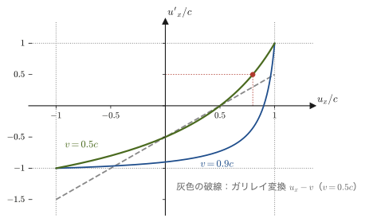
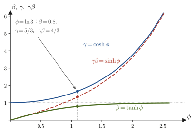

第56章ミンコフスキー時空 — 同時性の相対性と固有時
高校物理の「速度の合成」は，走る電車の中でボールを投げれば $u'=u-v$ のように足し算・引き算で済んだ．前の 2 章で，この足し算は光に対しては成り立たず，ローレンツ変換（第54章 54.5）に置き換わることを見た．すると，速度の足し算も作り直さなければならない．前の章では，速度の変換則（定理55.4）を導いて，どんな速さをどう合成しても光の速さ $c$ を超えないことを確かめた．この章では，その計算を「2 つの出来事の座標の差の変換」という形にまとめ直して，以後の議論の出発点にする．
次に，時刻の式 $t'=\gamma(t-vx/c^2)$ の第 2 項のせいで，S 系で「同時」に起こる 2 つの出来事が S′ 系では同時でなくなること，つまり同時性は絶対的なものではないことを調べる．時間と空間が混ざり合って 1 つの「時空」をつくっていることの，もっとも端的な現れである．そこで，横軸に位置 $x$，縦軸に $ct$ をとる時空図（ミンコフスキー図）を描き，運動を「世界線」で，光の伝わり方を「光円錐」で表す．高校の $x$–$t$ グラフと似ているが，S′ 系の座標軸が斜めに傾くという新しい約束が加わる．
時空図からは，座標系を変えても変わらない不変間隔 $s^2=c^2t^2-x^2-y^2-z^2$ が見えてくる．その符号が，2 つの出来事が原因と結果になりうるか（因果関係をもてるか）を決める．また，動く時計が刻む時間，固有時 $\dd\tau=\dd t/\gamma$ を不変間隔から定義し，有名な双子のパラドックスを時空図と具体的な数値で解く．最後に，ローレンツ変換が三角関数ではなく双曲線関数（AD 02 で学んだ $\cosh,\sinh,\tanh$）による「時空の回転」であることを，速さの「角度」にあたるラピディティで見る．
この章の内容は，次の第57章で 4 元ベクトルと相対論的力学（$E=mc^2$）へ進むための，幾何学的な土台になる．
- ローレンツ変換が 1 次式であることから，2 つの出来事の座標の差の変換（定理56.1）を導くこと．前章の速度の変換則との関係，同じ向きの速度の合成，光行差
- 同時性の相対性：$\Delta t'=\gamma(\Delta t-v\Delta x/c^2)$ から，$\Delta t=0$ でも $\Delta x\neq0$ なら $\Delta t'\neq0$ となること．アインシュタインの列車の思考実験
- 時空図（ミンコフスキー図）の描き方：縦軸を $ct$ にそろえる理由，世界線，光円錐，S′ 系の座標軸の傾き，同時刻線
- 不変間隔 $s^2=c^2t^2-x^2-y^2-z^2$ とそのローレンツ変換に対する不変性の証明．時間的・空間的・光的な間隔と，因果律との関係
- 固有時 $\dd\tau=\dd t/\gamma$ と，$\tau=\int\dd t/\gamma(t)$（速度が変化する場合）．時間の遅れ $\Delta t=\gamma\Delta\tau$ との関係
- 双子のパラドックスを時空図と数値で解く．非対称性の所在（どちらが慣性系を乗り換えたか）
- ラピディティ $\tanh\phi=\beta$ と，双曲線回転としてのローレンツ変換．ラピディティの加法性（速度の合成則との関係）
関連するノート：望月泰英『物理学ノート 特殊相対性理論』 pp. 3–4, 9．
56.1 座標の差の変換と速度の合成則
速度は「位置の変化 ÷ 時間の変化」なので，ローレンツ変換のもとでは，位置だけでなく時間の変化も座標系ごとに変わることを考えに入れなければならない．前章 55.6 節では，ローレンツ変換を時間で微分して，速度の変換則（定理55.4）を，運動の向きに垂直な成分も含めて導いた．この節では，その計算を「2 つの出来事の座標の差の変換」という形で見直す．差の変換（定理56.1）は，同時性（56.2 節），時空図（56.3 節），不変間隔（56.4 節），固有時（56.5 節）のすべての出発点になる．そのあとで，速度の変換則の使い道として，同じ向きの速度の合成と光行差を調べる．
設定と記号は第54章・第55章と同じである．S 系に対して S′ 系が $x$ 軸の正の向きに一定の速さ $v\ [\mathrm{m/s}]$ で動いており（$t=t'=0$ で原点が一致し，軸は互いに平行．第54章 54.5），質点の速度は S 系で $\bm{u}=(u_x,u_y,u_z)=(\dd x/\dd t,\ \dd y/\dd t,\ \dd z/\dd t)$，S′ 系で $\bm{u}'=(u'_x,u'_y,u'_z)=(\dd x'/\dd t',\ \dd y'/\dd t',\ \dd z'/\dd t')$ と書く（4 元速度の記号 $u^\mu$ とは別のもの．第57章）．
56.1.1 座標の差のローレンツ変換
ローレンツ変換（第54章）を，ここでもう一度書いておく．
\begin{equation} x'=\gamma\,(x-vt),\qquad y'=y,\qquad z'=z,\qquad t'=\gamma\left(t-\frac{v}{c^2}x\right),\qquad \gamma=\frac{1}{\sqrt{1-(v/c)^2}} \label{eq:56-lorentz} \end{equation}この変換は，$x,t$ の1 次式（線形変換）である．そのため，2 つの出来事 $\mathrm{P}_1$ $(t_1,x_1,y_1,z_1)$ と $\mathrm{P}_2$ $(t_2,x_2,y_2,z_2)$ の座標の「差」も，同じ形の式で変換される．ここで出来事（event）とは，「いつ，どこで」起こったかという 1 点の時空座標で決まる事象（たとえば「時刻 $t_1$ に位置 $x_1$ で閃光が光った」）のことである．
定理56.1 座標の差の変換
2 つの出来事の座標の差を $\Delta t=t_2-t_1$，$\Delta x=x_2-x_1$，$\Delta y=y_2-y_1$，$\Delta z=z_2-z_1$（S′ 系での差 $\Delta t',\Delta x',\Delta y',\Delta z'$ も同様）と書くと，
\begin{equation} \Delta x'=\gamma\,(\Delta x-v\Delta t),\qquad \Delta y'=\Delta y,\qquad \Delta z'=\Delta z,\qquad \Delta t'=\gamma\left(\Delta t-\frac{v}{c^2}\Delta x\right) \label{eq:56-delta} \end{equation}が成り立つ．差を無限に小さくとった微小量 $\dd t,\dd x,\dd y,\dd z$ についても，まったく同じ形の式 $\dd x'=\gamma(\dd x-v\dd t)$，$\dd t'=\gamma(\dd t-v\dd x/c^2)$，$\dd y'=\dd y$，$\dd z'=\dd z$ が成り立つ．
証明
式 \eqref{eq:56-lorentz} を $\mathrm{P}_2$ と $\mathrm{P}_1$ のそれぞれに適用して引き算する．たとえば $x'$ については $x'_2=\gamma(x_2-vt_2)$，$x'_1=\gamma(x_1-vt_1)$ なので，
$$ \Delta x'=x'_2-x'_1=\gamma\,(x_2-vt_2)-\gamma\,(x_1-vt_1)=\gamma\,\bigl\{(x_2-x_1)-v\,(t_2-t_1)\bigr\}=\gamma\,(\Delta x-v\Delta t) $$である（$\gamma$ と $v$ は定数なので，くくり出せた）．$t'$ も同様に，$\Delta t'=\gamma\{(t_2-t_1)-\frac{v}{c^2}(x_2-x_1)\}=\gamma\,(\Delta t-v\Delta x/c^2)$．$y'=y,\ z'=z$ からは $\Delta y'=\Delta y,\ \Delta z'=\Delta z$ が直接出る．微小量の場合は，$\Delta\to\dd$ と読み替えればよい（1 次式は，$x'$ を $x,t$ の 2 変数関数と見て全微分をとっても，$\dd x'=\pdiff{x'}{x}\dd x+\pdiff{x'}{t}\dd t=\gamma\,\dd x-\gamma v\,\dd t$ と同じ結果になる．大学数学 第6章 6.4）．
（証明終わり）
イメージ：「座標」ではなく「座標の差」を使う理由
「時刻 $t$」や「位置 $x$」の値そのものは，原点と時計の合わせ方に依存する．一方，「ある出来事から別の出来事までの時間の差 $\Delta t$ と距離の差 $\Delta x$」は，どの座標系でも測ることができる．時計の時刻合わせと原点の選び方の違いは，差をとると消える．この節以降の議論（速度・同時性・不変間隔）は，すべてこの式 \eqref{eq:56-delta} が出発点である．
56.1.2 速度の変換則との関係
質点が動いていて，その軌道 $x(t),y(t),z(t)$ が S 系で与えられているとする．軌道上の隣り合う 2 つの出来事——時刻 $t$ と時刻 $t+\dd t$ に質点がいる 2 点——に，定理56.1（微小量の形）を使ってみよう．S 系での座標の差は，速度の定義から $\dd x=u_x\dd t$，$\dd y=u_y\dd t$，$\dd z=u_z\dd t$ である．これを代入すると，
\begin{equation} \dd x'=\gamma\,(u_x-v)\,\dd t,\qquad \dd t'=\gamma\left(1-\frac{v\,u_x}{c^2}\right)\dd t,\qquad \dd y'=u_y\,\dd t,\qquad \dd z'=u_z\,\dd t \label{eq:56-dxdt-prime} \end{equation}となる．S′ 系での速度は，S′ 系で測った位置の変化を S′ 系で測った時間の変化で割ったものだから，式 \eqref{eq:56-dxdt-prime} の比をとって，共通の $\dd t$ を約分すれば，前章 55.6.2 節の導出とまったく同じ計算で，次の結果が得られる（$1/\gamma=\sqrt{1-v^2/c^2}$）．
逆に S′ 系の速度から S 系の速度を求める式は，S′ から見た S の速度が $-v$ であることから，$v\to-v$ と置き換えて
\begin{equation} u_x=\frac{u'_x+v}{1+\dfrac{v\,u'_x}{c^2}},\qquad u_y=\frac{u'_y\sqrt{1-v^2/c^2}}{1+\dfrac{v\,u'_x}{c^2}},\qquad u_z=\frac{u'_z\sqrt{1-v^2/c^2}}{1+\dfrac{v\,u'_x}{c^2}} \label{eq:56-vel-inv} \end{equation}である．導出の途中の細かい確認——運動方向に垂直な成分 $u_y,u_z$ も変わる理由，$v\ll c$ でガリレイ変換（高校の速度の足し算）に戻ること，光の速さが変わらないこと，どんな合成でも $c$ を超えないこと（定理55.5）——は，前章の 55.6 節に書いてある．この節で新しく大切なのは，式 \eqref{eq:56-dxdt-prime} の第 2 式，すなわち S′ 系の時計の進み $\dd t'$ が S 系の時計の進み $\dd t$ とは違い，因子 $\gamma(1-vu_x/c^2)$ だけ異なる，という点である（時間の遅れの因子 $\gamma$ と，同時性のずれの因子 $1-vu_x/c^2$ の積．56.5 節の固有時で再び使う）．
速度の変換の様子を 図56.1 に示す．ガリレイ変換 $u'_x=u_x-v$ は直線になるが，ローレンツ速度変換の曲線は $u_x=\pm c$ で $u'_x=\pm c$ を通り，$-c$ と $c$ のあいだにおさまる．

56.1.3 同じ向きの速度の合成と光行差
速度の変換則の使い道を 2 つ見よう．1 つめは，$x$ 方向だけの運動の合成である．S′ が S に対して $x$ 方向に速さ $\beta_1c$ で動き，物体が S′ に対して同じ $x$ 方向に速さ $\beta_2c$ で動いているとき，逆変換 \eqref{eq:56-vel-inv} で $v=\beta_1c$，$u'_x=\beta_2c$ とおくと，S 系での物体の速さ $\beta c$ は
\begin{equation} \beta=\frac{\beta_1+\beta_2}{1+\beta_1\beta_2} \label{eq:56-beta-add} \end{equation}となる（$\beta_1,\beta_2$ は $-1$ と $1$ のあいだの数）．分母の $\beta_1\beta_2$ がガリレイ的な足し算 $\beta_1+\beta_2$ からのずれをつくる．$\abs{\beta}\lt1$ であることは，$1-\beta=(1-\beta_1)(1-\beta_2)/(1+\beta_1\beta_2)$，$1+\beta=(1+\beta_1)(1+\beta_2)/(1+\beta_1\beta_2)$ と因数分解すれば，分子・分母がすべて正になることから確認できる（前章の演習55.5 と同じ計算）．たとえば $\beta_1=\beta_2=0.5$ なら $\beta=1.0/1.25=0.8$ で，光速には届かない（数値例は前章の例題55.13）．この合成則は，56.7 節でラピディティを使うと，$\phi=\phi_1+\phi_2$ という単純な足し算になる．
2 つめは，光の進む向きの変換，すなわち光行差である．次の例題で，任意の向きの光を式 \eqref{eq:56-vel} で変換する．
例題56.1 任意の向きの光と光行差
(a) S 系で，$x$ 軸となす角 $\theta$ の向きに進む光の速度は $\bm{u}=(c\cos\theta,\ c\sin\theta,\ 0)$ である．S′ 系での速度 $\bm{u}'$ を求め，その大きさが $c$ であることを確かめ，S′ 系での進行方向の角度 $\theta'$（$x'$ 軸となす角）について $\cos\theta'=\dfrac{\cos\theta-\beta}{1-\beta\cos\theta}$ となることを示せ．(b) 太陽（S 系．遠方の星に対して止まっているとみなす）に対して，地球（S′ 系）が公転の速さ $v=29.8\ \mathrm{km/s}$ で動いている．太陽に対して真上（$y$ 軸の負の向き，$\theta=-90^\circ$）から地球へ降ってくる星の光は，地球から見てどれだけ傾くか（光行差）．$c=2.998\times10^8\ \mathrm{m/s}$ とする．
解答 (a) 式 \eqref{eq:56-vel} に $u_x=c\cos\theta$，$u_y=c\sin\theta$，$u_z=0$ を代入する．$D=1-\beta\cos\theta$ とおくと，
$$ u'_x=\frac{c\cos\theta-v}{D}=c\,\frac{\cos\theta-\beta}{1-\beta\cos\theta},\qquad u'_y=\frac{c\sin\theta\sqrt{1-\beta^2}}{D}=c\,\frac{\sin\theta}{\gamma\,(1-\beta\cos\theta)} $$大きさを確かめる．$(u'_x)^2+(u'_y)^2=\dfrac{c^2}{D^2}\bigl\{(\cos\theta-\beta)^2+(1-\beta^2)\sin^2\theta\bigr\}$ で，波括弧の中は
$$ \cos^2\theta-2\beta\cos\theta+\beta^2+\sin^2\theta-\beta^2\sin^2\theta=1-2\beta\cos\theta+\beta^2\cos^2\theta=(1-\beta\cos\theta)^2=D^2 $$（$\sin^2\theta+\cos^2\theta=1$ と $\beta^2-\beta^2\sin^2\theta=\beta^2\cos^2\theta$ を使った）．したがって $(u'_x)^2+(u'_y)^2=c^2$，つまり速さは $c$ である．進行方向の角度は $u'_x=c\cos\theta'$ から，$\cos\theta'=(\cos\theta-\beta)/(1-\beta\cos\theta)$ である．
(b) $\theta=-90^\circ$：$\cos\theta=0$，$\sin\theta=-1$ なので，$u'_x=-v$，$u'_y=-c/\gamma$ となる．地球から見ると，光は真下ではなく，$-x$ 方向の速度成分をもつ（星の光が地球の進行方向の前方から来るように見える）．傾きの角 $\alpha$（$-y$ 方向からのずれ）は $\sin\alpha=\abs{u'_x}/c=\beta$ で，$\beta=29.8\times10^3/(2.998\times10^8)=9.94\times10^{-5}$ より，$\alpha\approx\beta=9.94\times10^{-5}\ \mathrm{rad}$．$1\ \mathrm{rad}=206\,265''$ を使うと，
$$ \alpha\approx9.94\times10^{-5}\times206\,265''\approx20.5'' $$すなわち約 $20.5$ 秒角である．半年後，地球の運動が逆向きになると傾きも逆になるので，1 年を周期として星の見かけの位置が，この角度の範囲で円や楕円を描く．この現象を光行差（aberration of light）といい，18 世紀前半にブラッドリー（Bradley）が発見した．
56.2 同時性の相対性
高校物理で「2 つの出来事が同時に起こった」というときは，それが誰から見ても同じ意味をもつと，ほとんど意識せずに信じていた．たとえば，「東京で午後 3 時に起きた事故と，大阪で午後 3 時に起きた事故は同時である」というように．ガリレイ変換 $t'=t$ は，まさにこの信念を式にしたものである．ところが，ローレンツ変換の時刻の式 $t'=\gamma\,(t-vx/c^2)$ には，$t$ だけでなく位置 $x$ も入っている．この節では，その帰結を正面から調べる．ある座標系で同時に起こった 2 つの出来事は，別の座標系では同時でない——同時性は座標系ごとに決まる相対的なものである．
イメージ：「同時」を決める手順
そもそも，離れた 2 地点 A，B で起こった出来事が「同時」であるとは，どういうことか．遠くの出来事は，光（か，それに類する信号）が届いてはじめてわかる．そこでアインシュタイン（Einstein）は，次のように定めた．A と B の中点 M に観測者が立ち，A で光った閃光と B で光った閃光が M にちょうど同時に届いたなら，A と B の出来事は（この観測者の座標系で）同時だとする．光の速さが向きによらず等しい（光速度不変の原理）ことが，この定義を可能にしている．次の 56.2.2 の列車の思考実験は，この定義から出発する．
56.2.1 ローレンツ変換から見る同時性のずれ
2 つの出来事 A，B の座標の差を，S 系で $\Delta t=t_B-t_A$，$\Delta x=x_B-x_A$ とし，S′ 系では $\Delta t'=t'_B-t'_A$ とする．前節の定理56.1（式 \eqref{eq:56-delta}）より，
\begin{equation} \Delta t'=\gamma\left(\Delta t-\frac{v}{c^2}\Delta x\right) \label{eq:56-simul} \end{equation}である．S 系で同時（$\Delta t=0$）でも，2 点が離れていれば（$\Delta x\neq0$），
\begin{equation} \Delta t'=-\gamma\,\frac{v\,\Delta x}{c^2}\neq0 \label{eq:56-simul-shift} \end{equation}となる．これが同時性の相対性（relativity of simultaneity）である．
定理56.2 同時性の相対性
ある慣性系で同時に（$\Delta t=0$）別々の場所（$\Delta x\neq0$）で起こった 2 つの出来事は，その系に対して $x$ 方向に速さ $v\neq0$ で動く慣性系では同時ではない．時刻のずれは $\Delta t'=-\gamma v\Delta x/c^2$ で，S′ 系では，進行方向（$+x$ 側）にある出来事のほうが先に起こったことになる．逆に，S 系で同時でない 2 つの出来事が，S′ 系で同時になることもある（$\Delta t'=0$ となる条件は $\Delta t=v\Delta x/c^2$）．
注意：「同時」とは座標系ごとに決まる言葉である
S′ 系で「同時」であるとは $t'_A=t'_B$ が成り立つことで，$t_A=t_B$ が成り立つこと（S 系で同時）と同じ意味ではない．ローレンツ変換 $t'=\gamma(t-vx/c^2)$ を見ればわかるとおり，$t_A=t_B$ でも $x_A\neq x_B$ なら $t'_A\neq t'_B$ である．同じ出来事の組に対して，「同時か否か」の答えは座標系によって違ってよい．ローレンツ収縮を導くときに，棒の両端の位置を「S′ 系で同じ時刻 $t'$ に」測ることが重要だったのは，このためである（第55章 55.1）．なお，$\Delta x=0$ なら $\Delta t'=\gamma\Delta t$ となるので，同時（$\Delta t=0$）かどうかは，$x$ 方向に動くどの座標系でも一致する（さらに $\Delta y=\Delta z=0$ なら，2 つの出来事は同じ 1 つの出来事なので，同時かどうかを問うこと自体に意味がない）．
式 \eqref{eq:56-simul-shift} の大きさを見積もっておこう．$c^2$ が非常に大きいので，日常の速さではほぼ 0 である（例題56.4）．同時性のずれが目に見えないのは，$v/c$ が小さいからにすぎない．
56.2.2 アインシュタインの列車の思考実験
同時性の相対性は，次の有名な思考実験（アインシュタインが解説書で用いた列車の思考実験を，教科書でよく使われる形に少し変えたもの）で，光速度不変の原理だけから直接理解できる．
まっすぐな線路を，一定の速さ $v$ で走る長い列車を考える．列車の中央に光源があり，ある瞬間に閃光を出す．光は，列車の前端と後端に向かって進む．列車に乗っている観測者（S′ 系）から見ると，光は前へも後ろへも同じ速さ $c$ で進み，両端は光源から同じ距離 $L/2$（$L$ は列車の静止長）にあるので，光は前端と後端に同時に届く（図56.2 の (a)）．
ところが，線路のそばに立っている観測者（S 系）から見ると，事情が違う．光の速さは，光源が動いていても，向きによらず $c$ である（光速度不変の原理）．その間に，列車の後端は進んできた光に向かって近づき，前端は光から逃げるように遠ざかる．したがって，光は後端に先に届き，前端には後から届く（図の (b)）．地上の観測者にとっては，2 つの出来事「光が後端に届く」「光が前端に届く」は，同時ではない．
どちらの観測者の結論が「正しい」のか，と問うのは意味がない．どちらも，それぞれの座標系で，光の速さ $c$ と自分の物差しと時計で得た正しい結論であり，同時性が座標系ごとに違うという事実の現れである．次に，この結論を，ローレンツ変換で定量的に確かめよう．
導出：地上から見た 2 つの到達時刻の差
列車の中央の光源が発光する出来事 E を，両座標系の原点とする（S′ 系で $x'=0,\ t'=0$．S 系でも $x=0,\ t=0$）．列車の静止長を $L$ とすると，S′ 系で，前端は $x'=+L/2$，後端は $x'=-L/2$ にある．光が届く出来事 F（前端），R（後端）の S′ 系での座標は，光が $L/2$ を進む時間 $L/(2c)$ を使って，
$$ \text{F：}\ x'=\frac{L}{2},\quad ct'=\frac{L}{2},\qquad\qquad \text{R：}\ x'=-\frac{L}{2},\quad ct'=\frac{L}{2} $$である．両方で $t'=L/(2c)$ なので，同時である．S 系での時刻は，逆変換（式 \eqref{eq:56-lorentz} の $v\to-v$）$t=\gamma(t'+vx'/c^2)$，すなわち $ct=\gamma(ct'+\beta x')$ に代入して，
\begin{align} ct_{\mathrm F}&=\gamma\left(\frac L2+\beta\frac L2\right)=\gamma\,\frac L2\,(1+\beta),\qquad ct_{\mathrm R}=\gamma\left(\frac L2-\beta\frac L2\right)=\gamma\,\frac L2\,(1-\beta) \label{eq:56-train-times} \end{align}となる．$\beta\gt0$ なので $t_{\mathrm R}\lt t_{\mathrm F}$，つまり地上では後端が先である．時刻の差は
\begin{equation} \Delta t=t_{\mathrm F}-t_{\mathrm R}=\frac{\gamma L\beta}{c}=\frac{\gamma\,L\,v}{c^2} \label{eq:56-train-dt} \end{equation}である（次元：$\mathrm{m\cdot(m/s)/(m/s)^2=s}$ で時間）．この結果が式 \eqref{eq:56-simul} と合っていることも確かめられる．F と R の S 系での位置の差は，$x=\gamma(x'+vt')$ より $\Delta x=x_{\mathrm F}-x_{\mathrm R}=\gamma\left\{\frac L2(1+\beta)-\left(-\frac L2(1-\beta)\right)\right\}=\gamma L$（S 系で測った距離が $\gamma L$ に見えるのは，列車の縮んだ長さ $L/\gamma$ だけでなく，2 つの出来事の時刻がずれているため）で，S′ 系で $\Delta t'=0$ のとき式 \eqref{eq:56-simul} より $\Delta t=v\Delta x/c^2=v\gamma L/c^2$ となり，式 \eqref{eq:56-train-dt} に一致する．
（導出終わり）
考察：地上の観測者の直接の議論との一致
式 \eqref{eq:56-train-times} は，S 系の観測者が「光の速さは $c$，列車の長さはローレンツ収縮して $L_{\mathrm g}=L/\gamma$」と考えて直接求めた結果と一致する．S 系で，時刻 $0$ に前端は $x=L_{\mathrm g}/2$，後端は $-L_{\mathrm g}/2$（光源は原点）にあり，前端は速さ $v$ で逃げ，後端は速さ $v$ で近づく．光が後端に届くのは $ct=-L_{\mathrm g}/2+vt$（後端の位置）$=-ct$（光の位置）から，$t_{\mathrm R}=\dfrac{L_{\mathrm g}}{2(c+v)}$．前端に届くのは $ct=L_{\mathrm g}/2+vt$ から，$t_{\mathrm F}=\dfrac{L_{\mathrm g}}{2(c-v)}$．$L_{\mathrm g}=L/\gamma$ と，$\dfrac{1}{\gamma(1+\beta)}=\gamma(1-\beta)$，$\dfrac{1}{\gamma(1-\beta)}=\gamma(1+\beta)$（$\gamma^2(1-\beta^2)=1$ から）を使うと，$t_{\mathrm R}=\dfrac{\gamma L(1-\beta)}{2c}$，$t_{\mathrm F}=\dfrac{\gamma L(1+\beta)}{2c}$ となって，確かに式 \eqref{eq:56-train-times} である．同時性の相対性，ローレンツ収縮，光速度不変が，互いに矛盾なく結びついていることがわかる．
56.2.3 順序が入れ替わるとき，入れ替わらないとき
同時でない 2 つの出来事の「前後」も，座標系によって入れ替わることがある（例題54.8 の (B) がその例である）．すると，原因が結果より先に起こるという因果律は，大丈夫なのだろうか．この疑問は，56.4 節でくわしく調べる．ここでは，答えの見通しを 1 つだけ示しておく．
定理56.3 光で結べる出来事の順序は，どの座標系でも変わらない
S 系で $\Delta t\gt0$ かつ $\abs{\Delta x}\le c\,\Delta t$（A から出た光が B に届きうる，または B に届く）である 2 つの出来事 A，B について，任意の速さ $\abs{v}\lt c$ の S′ 系でも $\Delta t'\gt0$ である．
証明
式 \eqref{eq:56-simul} を $\Delta t'=\gamma\,\Delta t\,\bigl(1-\beta\,\Delta x/(c\Delta t)\bigr)$ と書き直す（$\Delta t\gt0$ で割ってかけただけ）．条件 $\abs{\Delta x}\le c\Delta t$ より $\abs{\Delta x/(c\Delta t)}\le1$，また $\abs{\beta}\lt1$ なので，$\abs{\beta\,\Delta x/(c\Delta t)}\lt1$，したがって括弧の中は正である．$\gamma\gt0$，$\Delta t\gt0$ とあわせて $\Delta t'\gt0$．
（証明終わり）
逆に，$\abs{\Delta x}\gt c\,\Delta t$（光でも結べないほど離れている）なら，$\beta\Delta x/(c\Delta t)$ が $1$ をこえるような $\beta$ が存在し，そのとき $\Delta t'\lt0$ となって順序が入れ替わる．その境目が，次節以降の「光円錐」である．
例題56.2 同時になる座標系と，順序が入れ替わる座標系
S 系で，出来事 A は $x_A=0$，$t_A=0$，出来事 B は $x_B=600\ \mathrm m$，$t_B=1.0\ \mu\mathrm{s}$（$=1.0\times10^{-6}\ \mathrm s$）で起こった．$c=3.00\times10^8\ \mathrm{m/s}$ とする．(a) S′ 系（$+x$ 方向に速さ $v$）で A と B が同時になる $v$ を求めよ．(b) $v=0.6c$ の S′ 系では，A と B のどちらが先か．時間差はいくらか．
解答 まず $\Delta t=1.0\times10^{-6}\ \mathrm s$，$\Delta x=600\ \mathrm m$．光が $\Delta t$ の間に進む距離は $c\Delta t=300\ \mathrm m$ で，$\abs{\Delta x}=600\ \mathrm m\gt300\ \mathrm m$ だから，光でも結べない 2 点である．(a) 式 \eqref{eq:56-simul} で $\Delta t'=0$ とおくと，$\Delta t=v\Delta x/c^2$ より
$$ v=\frac{c^2\Delta t}{\Delta x}=\frac{(3.00\times10^8)^2\times1.0\times10^{-6}}{600}\ \mathrm{m/s}=1.50\times10^{8}\ \mathrm{m/s}=0.50\,c $$である（$0.50c\lt c$ なので，このような座標系は存在する）．(b) $v=0.6c$ のとき $\gamma=1.25$ で，
$$ \Delta t'=\gamma\left(\Delta t-\frac{v\Delta x}{c^2}\right)=1.25\times\left(1.0\times10^{-6}-\frac{0.6\times600}{3.00\times10^8}\right)\ \mathrm s =1.25\times\left(1.0-1.2\right)\times10^{-6}\ \mathrm s=-2.5\times10^{-7}\ \mathrm s $$（$0.6c\times600/c^2=0.6\times600/c=360/(3.00\times10^8)\ \mathrm s=1.2\times10^{-6}\ \mathrm s$）．よって B のほうが $0.25\ \mu\mathrm s$ 先に起こったことになる．S 系では A が先（$\Delta t\gt0$）だったので，順序が入れ替わっている．
例題56.3 列車の思考実験の数値
静止長 $L=300\ \mathrm m$ の列車が $v=0.6c$ で走っている．中央から出た閃光が前端・後端に届く時刻を，地上（S 系）の時計で，発光時を $t=0$ として求めよ．また，その差を式 \eqref{eq:56-train-dt} で確かめよ．$c=3.00\times10^8\ \mathrm{m/s}$．
解答 $\beta=0.6$，$\gamma=1.25$．式 \eqref{eq:56-train-times} より，
$$ t_{\mathrm R}=\frac{\gamma L(1-\beta)}{2c}=\frac{1.25\times300\times0.4}{2\times3.00\times10^8}\ \mathrm s=\frac{150}{6.00\times10^8}\ \mathrm s=2.5\times10^{-7}\ \mathrm s=0.25\ \mu\mathrm s $$ $$ t_{\mathrm F}=\frac{\gamma L(1+\beta)}{2c}=\frac{1.25\times300\times1.6}{2\times3.00\times10^8}\ \mathrm s=\frac{600}{6.00\times10^8}\ \mathrm s=1.0\times10^{-6}\ \mathrm s=1.0\ \mu\mathrm s $$差は $t_{\mathrm F}-t_{\mathrm R}=0.75\ \mu\mathrm s$．式 \eqref{eq:56-train-dt} では $\gamma Lv/c^2=1.25\times300\times0.6c/c^2=1.25\times300\times0.6/c=225/(3.00\times10^8)\ \mathrm s=7.5\times10^{-7}\ \mathrm s=0.75\ \mu\mathrm s$ で一致する．このとき地上から見た列車の長さは $L/\gamma=240\ \mathrm m$ で，前端が $x=+120\ \mathrm m+vt_{\mathrm F}=120+0.6\times300=300\ \mathrm m$，後端が $x=-120+vt_{\mathrm R}=-120+45=-75\ \mathrm m$ のとき光と出会う（光の位置 $x=\pm ct$ は $t_{\mathrm F}$ で $+300\ \mathrm m$，$t_{\mathrm R}$ で $-75\ \mathrm m$ で一致）．図56.2 の数値はこれである（$L=1$ の単位）．
例題56.4 日常の速さで同時性のずれは見えるか
時速 $100\ \mathrm{km}$（$v=27.8\ \mathrm{m/s}$）で走る電車から見ると，地上で $1.0\ \mathrm{km}$ 離れた 2 地点で同時に起こった出来事は，どれだけの時間差になるか．$\gamma\approx1$ としてよい．
解答 式 \eqref{eq:56-simul-shift} で $\Delta x=1.0\times10^{3}\ \mathrm m$，$\gamma\approx1$ とすると，
$$ \abs{\Delta t'}\approx\frac{v\,\Delta x}{c^2}=\frac{27.8\times1.0\times10^3}{(3.00\times10^8)^2}\ \mathrm s=\frac{2.78\times10^4}{9.0\times10^{16}}\ \mathrm s\approx3\times10^{-13}\ \mathrm s $$である．$0.3\ \mathrm{ps}$（ピコ秒，$10^{-12}\ \mathrm s$）にすぎず，人間の感覚どころか，通常の時計でも測れない．同時性のずれが日常で気づかれないのは，$v/c\approx10^{-7}$ が小さいためである．新幹線の速さ $v=83\ \mathrm{m/s}$（時速 $300\ \mathrm{km}$）でも，$10^{-12}\ \mathrm s$ 程度である．
56.3 時空図 — 世界線・光円錐・S′ の座標軸
高校物理では，物体の運動を $x$–$t$ グラフ（横軸に時刻 $t$，縦軸に位置 $x$）で表した．グラフの傾きが速度を表す，あの図である．ローレンツ変換では，時間と空間が混ざり合って変換される．そこで，時間と位置を対等に扱える図——時空図（spacetime diagram，ミンコフスキー図）——を使うと，同時性の相対性や，これから調べる光円錐，因果律，固有時が，一目で見えるようになる．この図の考え方は，ミンコフスキー（Minkowski）が 1908 年に示したものである．
56.3.1 時空図の描き方と世界線
時空図では，横軸に位置 $x$，縦軸に $ct$ をとる（$y,z$ は省略して 1 次元の運動だけを描くか，別の図で描く）．高校の $x$–$t$ グラフとは，縦軸と横軸が入れ替わっている（時間を縦軸に，上向きを未来にするのが慣習である）．そして，縦軸に時刻 $t$ そのものではなく，時刻に光速をかけた $ct$ をとる．$ct$ の単位は $\mathrm{s\times m/s=m}$，つまり長さである．これには次の理由がある．
- 両軸の次元と目盛りをそろえるため．縦軸と横軸がどちらも長さなら，同じ目盛りで描けて，図の幾何（角度や傾き）が意味をもつ．
- 光の世界線が 45° になるため．光は $x=\pm ct$ に沿って進む．これは $ct$ と $x$ を同じ目盛りで描けば，傾き $\pm45^\circ$ の直線になる．光の速さがどの座標系でも同じ $c$ であることは，「光の線は，どの座標系の時空図でも 45° である」という形で図に現れる．
- ローレンツ変換が対称な形になるため．式 \eqref{eq:56-lorentz} を $x'=\gamma(x-\beta\,ct)$，$ct'=\gamma(ct-\beta x)$ と書くと，$ct$ と $x$ が同じ立場で現れる（第54章 54.7）．
時空図の 1 点は，「いつ，どこで」を指定する出来事（event）である．時間が経つとともに，質点は時空図の中で 1 本の曲線をなぞる．
定義56.1 世界線
質点が時々刻々いる位置を，時空図上の点 $(x(t),\,ct)$ としてつなげた曲線を，その質点の世界線（world line）という．
世界線の形から，質点の運動がわかる（図56.3）．
- 静止している質点（$x=$ 一定）の世界線は，$ct$ 軸に平行な垂直な直線である．時間だけが進み，位置は変わらない．
- 等速直線運動 $x=x_0+vt$ の世界線は，傾いた直線である．時空図の横軸 $x$，縦軸 $ct$ で $x=x_0+\beta\,ct$（$\beta=v/c$）なので，$ct$ 軸となす角 $\theta$ について $\tan\theta=\dd x/\dd(ct)=\beta$ である．速いほど，垂直から大きく傾く．（高校の $x$–$t$ グラフでは速度が傾きだったが，ここでは縦軸と横軸が入れ替わっているので，$ct$ 軸からの傾きの $\tan$ が $v/c$ になっている．）
- 光は $\beta=1$ なので $\theta=45^\circ$．質量のある物体は $\abs{\beta}\lt1$ なので，世界線はつねに $ct$ 軸から $45^\circ$ 未満の傾きにとどまる（第57章）．
- 速度が変化する運動（加速）の世界線は曲線になる．曲線上の各点での接線の傾き $\tan\theta=\dd x/\dd(ct)=v(t)/c$ が，その瞬間の速度を表す．
56.3.2 光円錐
時空図の原点 O の出来事——たとえば，点 O で瞬間的に閃光が光った——を考えよう．光は，空間のすべての向きに速さ $c$ で広がるので，3 次元空間では，閃光から時間 $t$ 後には半径 $ct$ の球面が広がる．この球面上の点の座標 $(x,y,z)$ は $x^2+y^2+z^2=c^2t^2$ を満たす（第54章 54.5 の光の波面の式）．時空図に描く出来事の集まりとして書き直すと，
\begin{equation} c^2t^2-x^2-y^2-z^2=0 \qquad(t\ge0\ \text{が未来，}\ t\le0\ \text{が過去}) \label{eq:56-cone} \end{equation}である．$y,z$ を省略して $x$ だけの 1 次元にすると，$ct=\pm x$，すなわち $45^\circ$ の 2 本の直線（図56.3 の橙の破線）である．空間 2 次元 $(x,y)$ まで描くと，これは $ct=\pm\sqrt{x^2+y^2}$，つまり $ct$ 軸を軸とする円錐になる（図56.3 (b)）．そこでこの面を光円錐と呼ぶ．
定義56.2 光円錐（未来光円錐・過去光円錐）
原点の出来事 O から出た光が進んでいく出来事の集まり $c^2t^2-x^2-y^2-z^2=0,\ t\ge0$ を未来光円錐（future light cone），O に光として届く出来事の集まり（$t\le0$ の側）を過去光円錐（past light cone）という．2 つを合わせて光円錐（light cone）という．円錐の内側は $c^2t^2-x^2-y^2-z^2\gt0$，外側は $\lt0$ である．
質点が O を通り，速さ $u\lt c$ で運動するなら，時刻 $t$ の位置は $\sqrt{x^2+y^2+z^2}\lt ct$，すなわち $c^2t^2-x^2-y^2-z^2\gt0$ を満たす．したがって，O を通る質点の世界線は，つねに光円錐の内側にある．光より遅い運動では，O から光円錐の外側の出来事に行くことはできない．光円錐は，「O の出来事が影響を及ぼしうる範囲（未来光円錐の内側とその上）」と，「O が影響を受けうる範囲（過去光円錐の内側とその上）」を区切る境界になっている．これは 56.4 節で，不変間隔を使ってくわしく調べる．
56.3.3 S′ 系の座標軸は傾く
S 系に対して $x$ 方向に速さ $v$ で動く S′ 系の座標軸 $x'$，$ct'$ を，S 系の時空図に描き込もう．座標軸は，座標の一方が $0$ である点の集まりである．
導出：S′ 系の座標軸の位置
(i) $ct'$ 軸は，$x'=0$ の点の集まり，つまり S′ の原点 O′ の世界線である．ローレンツ変換 $x'=\gamma(x-\beta\,ct)=0$ より，
\begin{equation} x=\beta\,ct \label{eq:56-ct-prime-axis} \end{equation}これは O′ が速さ $v$ で $+x$ 方向に動いている（S 系で $x=vt$）ことにほかならない．$ct$ 軸（$x=0$）から角 $\theta$ だけ傾いた直線で，$\tan\theta=\beta$．
(ii) $x'$ 軸は，$ct'=0$ の点の集まり，つまり S′ 系で「時刻 $0$」の，同時な出来事の集まりである．$ct'=\gamma(ct-\beta x)=0$ より，
\begin{equation} ct=\beta\,x \label{eq:56-x-prime-axis} \end{equation}これは $x$ 軸（$ct=0$）から角 $\theta'$ だけ傾いた直線で，$\tan\theta'=\beta$，つまり $\theta'=\theta$ である．
（導出終わり）
結果を図にしたものが図56.4である．S′ 系の 2 本の軸は，どちらも $45^\circ$ の光の線に向かって同じ角度 $\theta$ だけ傾く．$\beta$ が大きいほど，はさみを閉じるように傾きが大きくなる．$v\to c$（$\beta\to1$）の極限では，両方の軸が光の線に重なってしまう．この図は，つぎのことを教えてくれる．
- S′ 系での出来事の座標 $(x',ct')$ は，その点から S′ の軸に平行に線を引き，軸との交点で読み取る（図56.4 の緑の点線．S 系の座標は水平・垂直の線で読むが，S′ 系の座標は軸に平行な線で「斜めに」読む）．たとえば $x'$ が一定の点は，$ct'$ 軸に平行な直線上にある．
- $ct'$ が一定の点，つまり S′ 系で同時な出来事は，$x'$ 軸に平行な直線（右上がりの直線）上にある．S 系で同時な出来事が水平な直線上にあることと比べると，「同時の直線」が座標系によって違うことがわかる（56.3.4）．
注意：時空図の上の「見かけの長さ」は，本当の長さではない
S′ 系の軸の目盛りの間隔は，図の上では S 系の目盛りと同じ長さではない．たとえば，$ct'=1$ の点の S 系での座標は，逆変換 $x=\gamma(x'+\beta ct')$，$ct=\gamma(ct'+\beta x')$ に $x'=0,\ ct'=1$ を代入して $(x,ct)=(\gamma\beta,\ \gamma)$ である．この点と原点の図の上での距離は $\sqrt{\gamma^2\beta^2+\gamma^2}=\gamma\sqrt{1+\beta^2}\gt1$ で，S 系の目盛り 1 より長く描かれる．S′ 系の軸の上の点が図の上で長く見えても，S′ 系で測った長さが長いわけではない（S′ 系の観測者にとっては，これが目盛り 1 である）．時空図は，ふつうのユークリッド幾何の図とは目盛りの読み方が違うのである．正しい目盛りの決め方は，次に述べる座標系によらない量による．（この量は，56.4 節で不変間隔として定義する．）
目盛りを正しく決めるには，座標系によらない量が必要である．前章で，ローレンツ変換が $c^2t^2-x^2$ を変えないこと（$c^2t'^2-x'^2=c^2t^2-x^2$）を見た（第54章 54.5）．S′ 系の $ct'$ 軸上で $ct'=1$ の点（$x'=0$）では $(ct')^2-x'^2=1$ なので，S 系でも $(ct)^2-x^2=1$ を満たす．つまり，$ct'=1$ の点は双曲線 $(ct)^2-x^2=1$ の上にある．同様に，$x'$ 軸上の $x'=1$ の点は双曲線 $x^2-(ct)^2=1$ の上にある．図56.4 の赤い双曲線がそれで，これらが両方の座標系で「同じ長さ・同じ時間」の目盛りを与える．
数学の道具：斜交座標と基底ベクトル
S′ の軸は，S 系の図の上で互いに直交しない斜交座標をつくる．S′ 系の座標が $(x',ct')$ の点は，S 系の図の上で $\begin{pmatrix}x\\ct\end{pmatrix}=x'\begin{pmatrix}\gamma\\\gamma\beta\end{pmatrix}+ct'\begin{pmatrix}\gamma\beta\\\gamma\end{pmatrix}$ にある（逆変換 $x=\gamma(x'+\beta ct')$，$ct=\gamma(ct'+\beta x')$ を，ベクトルの 1 次結合の形に書いただけである）．2 本のベクトル $(\gamma,\gamma\beta)$，$(\gamma\beta,\gamma)$ が S′ の座標軸に沿った基底であり，この基底で座標を測ることが，行列 $\Lambda(-\beta)$ をかけることに対応する（大学数学 第11章 11.4，第54章 54.7）．
56.3.4 同時性の相対性を時空図で見る
時空図では，「同時」は「軸に平行な直線」として見える．S 系で同時な出来事は水平な直線（$ct$ が一定）の上に，S′ 系で同時な出来事は $x'$ 軸に平行な，右上がりの直線の上にある．同じ出来事の組が，S 系の水平な直線には乗るが，S′ 系の右上がりの直線には乗らない（あるいはその逆）のが，同時性の相対性である．前の 56.2.2 の列車の思考実験を，時空図で描いてみよう（図56.5）．
S 系を地上，S′ 系を列車とし，$v=0.6c$（$\gamma=1.25$）で，列車の静止長 $L=4$（任意の長さの単位）とする．S′ 系で，光源は $x'=0$，後端は $x'=-2$，前端は $x'=+2$ である．これらの世界線は，どれも $ct'$ 軸に平行な直線で，S 系の図では傾いた平行線になる．発光の出来事 E を原点にとり，光は $45^\circ$ の線で左右に進む．光が後端に届く出来事 R，前端に届く出来事 F は，S′ 系では $ct'=2$，つまり $x'$ 軸に平行な同じ直線の上にあって同時である．これを S 系に変換すると（逆変換 $x=\gamma(x'+\beta ct')$，$ct=\gamma(ct'+\beta x')$ を使う），
$$ \text{R：}\ x=1.25\,(-2+0.6\times2)=-1.0,\quad ct=1.25\,(2+0.6\times(-2))=1.0;\qquad \text{F：}\ x=1.25\,(2+1.2)=4.0,\quad ct=1.25\,(2+1.2)=4.0 $$である（R は $x=-ct$，F は $x=ct$ で，どちらも光の線の上にある）．S 系では，R が $ct=1$，F が $ct=4$ で，水平な線が違う．F のほうがずっと後である．時刻の差は $\Delta(ct)=3$ で，式 \eqref{eq:56-train-dt} の $\gamma\beta L=1.25\times0.6\times4=3$ に一致している．
イメージ：時間軸が傾くと「同時の直線」も傾く
S′ 系の $ct'$ 軸が S 系の $ct$ 軸に対して右へ傾くと，それとちょうど鏡の関係になるように，$x'$ 軸（S′ 系の「現在」を表す直線）が右上がりに傾く．その角度は，$ct'$ 軸の傾きと同じ $\theta$（$\tan\theta=\beta$）である．「時間の方向」が傾いたぶんだけ「空間の方向」も傾く，という対称性が，「時間と空間が混ざる」ことの正体である．そして，この傾きに上限があり，$45^\circ$ の光の線をこえて傾くことはない（$\abs{\beta}\lt1$）．これが，56.2.3 で見た「光で結べる出来事の順序は入れ替わらない」ことの図形的な意味である（56.4 節）．
例題56.5 世界線の傾き
ロケットが，地球（S 系）に対して $t=0$ に $x=0$ を出発し，一定の速さ $v=0.8c$ で $+x$ 方向に進む．(a) 時空図（横軸 $x$，縦軸 $ct$，どちらも光年）の上で，ロケットの世界線が $ct$ 軸となす角 $\theta$ を求めよ．(b) 出発から $5$ 年後（$ct=5$ 光年）のロケットの位置を求め，光の世界線と比べよ．
解答 (a) $\tan\theta=\beta=0.8$ より $\theta=\arctan0.8\approx38.7^\circ$．光は $45^\circ$ なので，ロケットの世界線は光の線より $ct$ 軸に近い側にある．(b) 世界線は $x=\beta\,ct$ なので，$ct=5$ 光年（$t=5$ 年）のとき $x=0.8\times5=4.0$ 光年．光は同じ時刻に $x=5$ 光年に達している．つまり，ロケットの世界線は，光の世界線より（$ct=5$ の高さで）$1$ 光年だけ内側を通る．これは，ロケットが光に追いつけないことの図示でもある．なお $\gamma=1/\sqrt{1-0.64}=5/3$．
例題56.6 S′ 系の座標軸の傾きと事象の座標
$\beta=0.6$ のときの (a) S′ 系の座標軸の傾き $\theta$，(b) $ct'=1$ の点の S 系での座標と，図の上での原点からの距離，(c) 事象 P（S 系で $(x,ct)=(2,4)$）の S′ 系の座標，を求めよ．(c) では，双曲線による目盛りの較正 $(ct)^2-x^2=(ct')^2-x'^2$ が成り立つことも確かめよ．
解答 (a) $\tan\theta=0.6$ より $\theta=\arctan0.6\approx31.0^\circ$．(b) $\gamma=1.25$，$\gamma\beta=0.75$ なので，点は $(x,ct)=(0.75,\ 1.25)$．原点からの距離は $\sqrt{0.75^2+1.25^2}=\sqrt{0.5625+1.5625}=\sqrt{2.125}\approx1.458$（$=\gamma\sqrt{1+\beta^2}=1.25\times\sqrt{1.36}$）で，1 より長い．この点は双曲線上にある：$1.25^2-0.75^2=1.5625-0.5625=1$．(c) $x'=\gamma(x-\beta ct)=1.25\times(2-0.6\times4)=1.25\times(-0.4)=-0.5$，$ct'=\gamma(ct-\beta x)=1.25\times(4-0.6\times2)=1.25\times2.8=3.5$．較正：$(ct)^2-x^2=16-4=12$，$(ct')^2-x'^2=12.25-0.25=12$ で一致する．
例題56.7 時空図から時間の遅れとローレンツ収縮を読む
$\beta=0.6$（$\gamma=1.25$）の S′ 系について，時空図（図56.4）を使って次を求めよ．(a) $ct'$ 軸（S′ の原点 O′ の世界線）の上の $ct'=1$ の点の，S 系での座標．S′ 系の時計が $1$ 進む間に，S 系の時計はいくつ進むか．(b) S′ 系に静止した，静止長 $1$ の棒（両端は $x'=0$ と $x'=1$）の，S 系で「同じ時刻 $ct=0$ に」測った長さ．
解答 (a) $ct'=1$ の点は $(x',ct')=(0,1)$ である．逆変換 $x=\gamma(x'+\beta ct')$，$ct=\gamma(ct'+\beta x')$ より，
$$ (x,ct)=(1.25\times0.6\times1,\ 1.25\times1)=(0.75,\ 1.25) $$である（この点は双曲線 $(ct)^2-x^2=1.5625-0.5625=1$ の上にある）．S′ 系の時計が $ct'=0$ から $1$ まで進む間に，S 系の時計は $ct=0$ から $1.25=\gamma$ まで進む．これが時間の遅れ（$\Delta t=\gamma\Delta\tau$）を時空図から読んだものである．逆に，S 系の時計が $ct=1$ の点 $(x,ct)=(0,1)$ を S′ 系の座標で読むと，$x'=\gamma(0-\beta\times1)=-0.75$，$ct'=\gamma\times1=1.25$ である．S′ 系から見ても，S 系の時計は $1$ 進むのに S′ 系の時間で $1.25$ かかり，遅れている（どちらから見ても相手の時計が遅れる）．
(b) 棒の両端の世界線は $ct'$ 軸に平行な直線 $x'=0$，$x'=1$ である．$x'=\gamma(x-\beta ct)$ を $x$ について解くと $x=x'/\gamma+\beta ct$ なので，両端の世界線は
$$ x=\beta\,ct\quad(x'=0),\qquad x=\frac{1}{\gamma}+\beta\,ct=0.8+0.6\,ct\quad(x'=1) $$である．S 系で同じ時刻 $ct=0$（時空図の水平線）に両端を測ると，左端は $x=0$，右端は $x=0.8$ で，長さは $0.8=1/\gamma$．静止長 $1$ より縮んでいる．これがローレンツ収縮（$L=L_0/\gamma$）である．「同じ時刻」を S 系の水平線で決めることが，ここでは大切である（S′ 系の同時刻線は水平線ではないので，S′ 系で両端を「同時に」測れば，棒の長さは $1$ のままである）．
56.4 不変間隔と因果律
時空図の上で，座標系を変えると，座標軸の傾きも点の座標も変わった．しかし，座標系を変えても変わらない量があるはずである．たとえば高校で，平面上の 2 点間の距離 $\sqrt{\Delta x^2+\Delta y^2}$ は，座標軸を回転させても変わらないことを学んだ．時空でも，ローレンツ変換で変わらない「距離」にあたる量がある．それが，この節で導入する不変間隔である．前章までに見た $c^2t^2-x^2$ の不変性（第54章 54.5）の，一般の場合への拡張である．
56.4.1 不変間隔の定義と不変性
2 つの出来事の時間差 $\Delta t$ と空間の差 $\Delta x,\Delta y,\Delta z$ から，次の量を作る．
定義56.3 不変間隔（世界間隔）
2 つの出来事の座標の差 $(\Delta t,\Delta x,\Delta y,\Delta z)$ に対して，
\begin{equation} \Delta s^2=c^2\Delta t^2-\Delta x^2-\Delta y^2-\Delta z^2 \label{eq:56-interval} \end{equation}を不変間隔（invariant interval，世界間隔）という．原点 O $(t=0,\bm{r}=\bm{0})$ の出来事からの間隔なら $s^2=c^2t^2-x^2-y^2-z^2$，無限に近い 2 つの出来事の間隔なら $\dd s^2=c^2\dd t^2-\dd x^2-\dd y^2-\dd z^2$ である．単位は $\mathrm{m^2}$（$(\mathrm{m/s\cdot s})^2$）である．
符号は，第54章 54.5 の $(+,-,-,-)$ の約束（時間の項が正，空間の項が負）どおりである．
用語：時空とミンコフスキー時空
出来事の座標 $(t,x,y,z)$ を 1 点とする 4 次元の空間を時空（spacetime）という．その時空で，2 点の間の「距離」を不変間隔 $\Delta s^2$ で測るものを，ミンコフスキー時空（Minkowski spacetime）という．ふつうの距離 $\Delta x^2+\Delta y^2+\Delta z^2$ とちがって時間の項の符号が逆なので，$\Delta s^2$ は正にも $0$ にも負にもなる（次の 56.4.2）．この章の題名の「ミンコフスキー時空」とは，この幾何のことである．
定理56.4 不変間隔はローレンツ変換で変わらない
S′ が S に対して $x$ 方向に速さ $v$ で動いているとき，任意の 2 つの出来事について
\begin{equation} c^2\Delta t'^2-\Delta x'^2-\Delta y'^2-\Delta z'^2=c^2\Delta t^2-\Delta x^2-\Delta y^2-\Delta z^2 \label{eq:56-invariance} \end{equation}が成り立つ（$\Delta s'^2=\Delta s^2$）．
証明
定理56.1（式 \eqref{eq:56-delta}）より，$c\Delta t'=\gamma(c\Delta t-\beta\Delta x)$（$\Delta t'=\gamma(\Delta t-v\Delta x/c^2)$ の両辺に $c$ をかけ，$v/c=\beta$ を使った），$\Delta x'=\gamma(\Delta x-\beta c\Delta t)$，$\Delta y'=\Delta y$，$\Delta z'=\Delta z$ である．左辺の $t,x$ の部分を計算する：
\begin{align} c^2\Delta t'^2-\Delta x'^2&=\gamma^2\left\{(c\Delta t-\beta\Delta x)^2-(\Delta x-\beta c\Delta t)^2\right\}\nonumber\\ &=\gamma^2\left\{c^2\Delta t^2-2\beta c\Delta t\,\Delta x+\beta^2\Delta x^2-\Delta x^2+2\beta c\Delta t\,\Delta x-\beta^2c^2\Delta t^2\right\}\nonumber\\ &=\gamma^2\left\{(1-\beta^2)\,c^2\Delta t^2-(1-\beta^2)\,\Delta x^2\right\}\nonumber\\ &=\gamma^2(1-\beta^2)\left(c^2\Delta t^2-\Delta x^2\right)=c^2\Delta t^2-\Delta x^2 \nonumber \end{align}（2 行目で，展開した交差項 $\mp2\beta c\Delta t\,\Delta x$ が打ち消し合った．最後は $\gamma^2(1-\beta^2)=1$）．$y,z$ の部分は変わらない（$\Delta y'^2=\Delta y^2$，$\Delta z'^2=\Delta z^2$）ので，両辺をあわせて式 \eqref{eq:56-invariance} が得られる．
（証明終わり）
この事実は，二次元の平面の回転で $\Delta x^2+\Delta y^2$ が変わらないことの，時空版である．ただし，符号が違う（$+$ ではなく $-$）ので，変換する「回転」は円ではなく双曲線を保つ（56.7 節）．また，軸の向き（空間の回転）を変えても $\Delta x^2+\Delta y^2+\Delta z^2$ が変わらないので，不変間隔は空間の回転に対しても不変である．そのため，2 つの出来事の空間的な位置の差が $x$ 軸方向でなくても，空間の軸を回転してそろえたうえでローレンツ変換を使える．
56.4.2 時間的・空間的・光的
不変間隔の符号は，座標系によらないので，2 つの出来事の間の関係を分類できる．出来事 O（原点）と別の出来事 P の間隔 $s^2=c^2t^2-x^2-y^2-z^2$ で考えよう．
定義56.4 時間的・空間的・光的な間隔
2 つの出来事の間隔 $\Delta s^2$ が
- $\Delta s^2\gt0$（$c\abs{\Delta t}\gt\abs{\Delta\bm{r}}$）のとき，時間的（timelike）な間隔という．
- $\Delta s^2\lt0$（$c\abs{\Delta t}\lt\abs{\Delta\bm{r}}$）のとき，空間的（spacelike）な間隔という．
- $\Delta s^2=0$（$c\abs{\Delta t}=\abs{\Delta\bm{r}}$）のとき，光的（lightlike，または null）な間隔という．
ここで $\abs{\Delta\bm{r}}=\sqrt{\Delta x^2+\Delta y^2+\Delta z^2}$ は空間の距離である．
これは，光円錐（定義56.2）との位置関係でもある．O の出来事を原点にとると，時間的な出来事は光円錐の内側（未来側と過去側），空間的な出来事は光円錐の外側，光的な出来事は光円錐の上にある．不変間隔の符号は座標系によらないので，ある座標系で「時間的」な出来事の組は，すべての座標系で「時間的」であり，空間的・光的な組も同じである．座標系を変えても，2 つの出来事が光円錐の内側か外側かは変わらない．
定理56.5 時間的・空間的な間隔の 2 つの性質
(1) 2 つの出来事が時間的な間隔にあるとき，2 つの出来事が同じ場所で起こる座標系が存在する．その座標系での 2 つの出来事の時間差は $\Delta\tau=\sqrt{\Delta s^2}/c$ である．また，2 つの出来事の時間的な前後関係は，どの座標系でも同じである．
(2) 2 つの出来事が空間的な間隔にあるとき，2 つの出来事が同時に起こる座標系が存在する．その座標系での 2 つの出来事の距離は $\sqrt{-\Delta s^2}$ である．また，前後関係は座標系によって入れ替わる．
証明
空間の軸を回転して，2 つの出来事が $x$ 軸上（$\Delta y=\Delta z=0$）にあるとする．
(1) 時間的：$c\abs{\Delta t}\gt\abs{\Delta x}$．S′ 系の速さを $v=\beta_0c$，$\beta_0=\Delta x/(c\Delta t)$ とおくと，$\abs{\beta_0}\lt1$ である．定理56.1 より $\Delta x'=\gamma(\Delta x-v\Delta t)=\gamma(\Delta x-\beta_0c\Delta t)=\gamma(\Delta x-\Delta x)=0$．S′ 系での時間差は，不変性（式 \eqref{eq:56-invariance}）で $\Delta x'=\Delta y'=\Delta z'=0$ とおいて $c^2\Delta t'^2=c^2\Delta t^2-\Delta x^2=\Delta s^2$，すなわち $\abs{\Delta t'}=\sqrt{\Delta s^2}/c$ である．前後関係は，56.2.3 の定理56.3 で $\abs{\Delta x}\lt c\abs{\Delta t}$ に対して示したとおり（$\Delta t\lt0$ の場合は，2 つの出来事の名前を入れ替えて考えればよい），どの $\abs{v}\lt c$ の座標系でも $\Delta t'$ は $\Delta t$ と同符号である．
(2) 空間的：$c\abs{\Delta t}\lt\abs{\Delta x}$．$v=\beta_0c$，$\beta_0=c\Delta t/\Delta x$ とおくと，$\abs{\beta_0}\lt1$ で，$\Delta t'=\gamma(\Delta t-v\Delta x/c^2)=\gamma(\Delta t-\beta_0\Delta x/c)=\gamma(\Delta t-\Delta t)=0$．S′ 系での距離は，$-\Delta x'^2=\Delta s'^2=\Delta s^2$ より $\abs{\Delta x'}=\sqrt{-\Delta s^2}$．前後関係の入れ替わりは 56.2.3 のとおり，$\beta\Delta x/(c\Delta t)\gt1$ となるような $\beta$（たとえば $\beta_0$ より少し大きい $\beta$）をとればよい．
（証明終わり）
| 間隔 | $\Delta s^2$ | 光円錐に対する位置 | 座標系による違い | 因果関係 |
|---|---|---|---|---|
| 時間的 | $\gt0$ | 内側（未来側・過去側） | 同じ場所にできる．前後は不変 | ありうる |
| 光的 | $=0$ | 円錐の上 | 光速で結ばれる．前後は不変 | 光が運ぶ影響のみ |
| 空間的 | $\lt0$ | 外側（他所） | 同時にできる．前後は入れ替わる | ありえない |
56.4.3 光円錐と因果律
物理学の基本的な前提として，原因は結果より先に起こる（因果律，causality）．これがどの座標系でも成り立つかどうかが，相対性理論では問題になる．同時性が相対的で，前後関係さえ入れ替わりうるからである．
答えは，光円錐が与える．ある出来事 O が，別の出来事 P の原因となるためには，O から P へ，何らかの影響（力，信号，物質）が伝わらなければならない．物質や信号の伝わる速さは光速 $c$ 以下である（質量のある粒子の速さが $c$ を超えられないことは第57章で，電磁波の速さが $c$ であることは前章までに見た）．すると，P が O の影響を受けるためには，P は O の未来光円錐の内側か上に（$\Delta s^2\ge0$ で $\Delta t\gt0$）なければならない．
- P が時間的（または光的）で O より後にあるとき，P は O の影響を受けうる（O は P の原因になりうる）．前後関係は，時間的な場合は定理56.5 (1)，光的な場合を含めては定理56.3 により，すべての座標系で同じである．すなわち，因果律はすべての座標系で保たれる．O の未来光円錐の内側を絶対的未来，過去光円錐の内側を絶対的過去という．
- P が空間的な出来事なら，O と P を結ぶには光より速く信号を送らなければならず，因果関係はありえない．前後関係は座標系によって入れ替わるが，因果関係がないので，どちらが先かは物理的に意味がない．この領域を他所（elsewhere，空間的領域）という．
考察：もし光より速い信号があったら
もし速さ $w\gt c$ で情報を運べる信号があったとする．S 系で，出来事 A（発信）から出来事 B（受信）まで，信号が $x$ 方向に速さ $w$ で進んだとすると，$\Delta x=w\Delta t$（$\Delta t\gt0$）である．S′ 系で見た時間差は，式 \eqref{eq:56-simul} より
$$ \Delta t'=\gamma\left(\Delta t-\frac{v}{c^2}\,w\Delta t\right)=\gamma\,\Delta t\left(1-\frac{v\,w}{c^2}\right) $$である．$w\gt c$ なので，$v\gt c^2/w$（$c^2/w\lt c$ だから，この $v$ は $\abs{v}\lt c$ をみたす座標系として存在する）ならば $\Delta t'\lt0$，すなわち S′ 系では受信が発信より先になる．「受信した後に，発信がなされる」という因果律の破れが起こってしまう．したがって，相対性原理と因果律を両立させるには，信号や物質の速さの上限が $c$ でなければならない．
なお，位相速度（波の山が進む速さ）や，レーザーの光点が遠くの壁の上を動く見かけの速さが $c$ を超えることはありうるが，これらは信号も物質も運んでいない．
例題56.8 不変間隔の直接の確かめ
S 系で 2 つの出来事の座標の差が $(c\Delta t,\ \Delta x,\ \Delta y,\ \Delta z)=(10,\ 6,\ 3,\ 0)\ \mathrm m$ である．$v=0.8c$ の S′ 系での座標の差を求め，不変間隔が変わらないことを確かめよ．
解答 $\beta=0.8$，$\gamma=1/\sqrt{1-0.64}=5/3$．定理56.1 より，
$$ c\Delta t'=\gamma(c\Delta t-\beta\Delta x)=\frac53(10-0.8\times6)=\frac53\times5.2=\frac{26}{3}\approx8.667\ \mathrm m $$ $$ \Delta x'=\gamma(\Delta x-\beta c\Delta t)=\frac53(6-0.8\times10)=\frac53\times(-2)=-\frac{10}{3}\approx-3.333\ \mathrm m,\qquad\Delta y'=3\ \mathrm m,\ \ \Delta z'=0 $$不変間隔は，S 系で $10^2-6^2-3^2-0=100-36-9=55\ \mathrm{m^2}$．S′ 系で $(26/3)^2-(10/3)^2-3^2-0=\dfrac{676-100}{9}-9=\dfrac{576}{9}-9=64-9=55\ \mathrm{m^2}$．一致している．$\Delta s^2=55\gt0$ なので時間的な間隔である．
例題56.9 東京と大阪の 2 つの出来事
東京と大阪の距離を $400\ \mathrm{km}$ とする（直線距離のおおよその値）．東京で起こった出来事 A に対して，大阪で (a) $1.0\ \mathrm{ms}$ 後，(b) $2.0\ \mathrm{ms}$ 後に起こった出来事 B が，時間的・空間的のどちらの間隔かを判定せよ．また，(a) では同時になる座標系の速さと，そこでの 2 つの出来事の距離を，(b) では同じ場所になる座標系の速さと，そこでの時間差を求めよ．$c=2.998\times10^5\ \mathrm{km/s}$ とする．
解答 光が $\Delta t$ の間に進む距離 $c\Delta t$ と，2 地点の距離 $\Delta x=400\ \mathrm{km}$ を比べる．
(a) $c\Delta t=2.998\times10^5\ \mathrm{km/s}\times1.0\times10^{-3}\ \mathrm s=299.8\ \mathrm{km}\lt400\ \mathrm{km}=\Delta x$ なので，
$$ \Delta s^2=299.8^2-400^2=89\,880-160\,000=-70\,120\ \mathrm{km^2}\lt0 $$である．よって 空間的．光でも $1.0\ \mathrm{ms}$ では大阪に届かないので，A が B の原因にはなりえない．定理56.5 (2) より，同時になる座標系の速さは
$$ \beta_0=\frac{c\Delta t}{\Delta x}=\frac{299.8}{400}=0.7495,\qquad v=0.7495c\approx2.25\times10^8\ \mathrm{m/s} $$である．その座標系での 2 つの出来事の距離は $\sqrt{70\,120}\ \mathrm{km}\approx264.8\ \mathrm{km}$（$=400/\gamma$，$\gamma=1/\sqrt{1-0.7495^2}=1.511$）．答：空間的．速さ $0.7495c$ の系で同時になり，距離 $264.8\ \mathrm{km}$．
(b) $c\Delta t=599.6\ \mathrm{km}\gt400\ \mathrm{km}$ なので，
$$ \Delta s^2=599.6^2-400^2=359\,520-160\,000=199\,520\ \mathrm{km^2}\gt0 $$である．よって 時間的．光が東京から大阪に届く時間（$400\ \mathrm{km}/c=1.334\ \mathrm{ms}$）より遅い出来事なので，A は B の原因になりうる．同じ場所になる座標系の速さは $\beta_0=\Delta x/(c\Delta t)=400/599.6=0.667$，すなわち $v\approx2.0\times10^8\ \mathrm{m/s}$．その座標系での時間差は
$$ \Delta\tau=\frac{\sqrt{199\,520}\ \mathrm{km}}{c}=\frac{446.7\ \mathrm{km}}{2.998\times10^5\ \mathrm{km/s}}=1.490\ \mathrm{ms} $$である（$\Delta t/\gamma=2.0\ \mathrm{ms}\times\sqrt{1-0.667^2}=2.0\times0.745=1.49\ \mathrm{ms}$ と一致）．答：時間的．速さ $0.667c$ の系で同じ場所になり，時間差 $1.49\ \mathrm{ms}$．
例題56.10 太陽と地球：絶対的未来・絶対的過去・他所
地球（出来事 O：時刻 $t=0$）と太陽の距離は $1.496\times10^{11}\ \mathrm m$（約 $499\ \mathrm s$ の光の旅）である．太陽の表面で，次の時刻に起こる出来事を，O から見て，絶対的過去，絶対的未来，他所のいずれに分類できるか．(a) $t=-600\ \mathrm s$，(b) $t=-499\ \mathrm s$，(c) $t=-300\ \mathrm s$，(d) $t=+300\ \mathrm s$，(e) $t=+700\ \mathrm s$．太陽と地球は互いに静止しているとし，距離を $R=499\ \mathrm s\times c$ として扱う．
解答 太陽と地球の距離を光が進む時間 $R/c=499\ \mathrm s$ と，各出来事の O との時間差の大きさ $\abs{\Delta t}$ を比べる．$\abs{\Delta t}\gt499\ \mathrm s$ なら時間的（$\Delta s^2=c^2\Delta t^2-R^2\gt0$），$\lt499\ \mathrm s$ なら空間的，等しければ光的である．
(a) $\abs{\Delta t}=600\gt499$：時間的で，$\Delta t\lt0$ なので 絶対的過去．O に影響を与えられる．
(b) $\abs{\Delta t}=499$：光的で，過去光円錐の上．いま地球で見えている太陽の姿がこの出来事である（光的．「いま見えている太陽は約 8 分 19 秒前の姿」）．
(c) $300\lt499$：空間的で 他所．O と因果関係をもてない．たとえば，$5$ 分前に太陽の表面で起こった爆発は，いまの地球の出来事に影響しないし，地球からもわからない．
(d) $300\lt499$：空間的で，同じく 他所．いま地球で起こることは，$300\ \mathrm s$ 後の太陽の出来事に影響を与えられない．
(e) $700\gt499$：時間的で，$\Delta t\gt0$ なので 絶対的未来．地球から $499\ \mathrm s$ で届く光（信号）の影響を受けうる．
つまり，地球にとっての「いまの太陽」は，過去 $499\ \mathrm s$ から未来 $499\ \mathrm s$ までの，約 $998\ \mathrm s$（約 16 分半）のあいだに広がる「他所」の全体である．
56.5 固有時
前章で，動いている時計は遅れることを学んだ．そこでは，一定の速さ $v$ で動く時計について，静止している観測者の時間 $\Delta t$ と，動く時計が刻む時間 $\Delta\tau$ の関係が $\Delta t=\gamma\Delta\tau$ であることを見た（第55章 55.2）．この節では，不変間隔（定義56.3）を使って，この関係を一般化し，速さが変化する運動にも使えるようにする．運動している物体に「乗って」測る時間——固有時——である．
56.5.1 固有時の定義
時空図で，1 つの質点の世界線を考える．世界線上の隣り合う 2 つの出来事——時刻 $t$ と $t+\dd t$ の出来事——の間の不変間隔は，S 系で見ると $\dd s^2=c^2\dd t^2-\dd x^2-\dd y^2-\dd z^2$ である．質点は $\dd t$ の間に $\dd\bm{r}=\bm{u}\dd t$ だけ動くので，速さを $u=\abs{\bm{u}}$ として
\begin{equation} \dd s^2=c^2\dd t^2-\abs{\dd\bm{r}}^2=c^2\dd t^2\left(1-\frac{u^2}{c^2}\right) \label{eq:56-ds-u} \end{equation}である．$u\lt c$ なので $\dd s^2\gt0$，つまり質点の世界線上の隣り合う出来事は時間的な間隔である．
いっぽう，この質点が（その瞬間に）静止して見える慣性系（瞬間の静止系）を $\mathrm{S}_0$ と書こう．$\mathrm{S}_0$ では質点は動かないので $\dd\bm{r}_0=\bm{0}$ であり，質点に取りつけた時計が進む時間を $\dd\tau$ と書くと，$\dd s^2=c^2\dd\tau^2$ である．不変間隔はどの座標系で計算しても等しい（定理56.4）から，
\begin{equation} c^2\dd\tau^2=c^2\dd t^2-\abs{\dd\bm{r}}^2 \label{eq:56-dtau-def} \end{equation}が成り立つ．
定義56.5 固有時
質点の世界線に沿った不変間隔 $\dd s$ を $c$ で割った量
\begin{equation} \dd\tau=\frac{\dd s}{c}=\sqrt{\dd t^2-\frac{\abs{\dd\bm{r}}^2}{c^2}} \label{eq:56-proper} \end{equation}を，その質点の固有時（proper time）という．質点に乗っている（質点とともに動く）時計が刻む時間であり，どの座標系でも同じ値をとる．
前章の定義55.2 の固有時（時計が静止している系で，同じ場所で起こる 2 つの出来事の間の時間）は，一定の速さで運動する場合の，この定義の特別な場合である．定義56.5 の形は，速さが変化する運動にも，そのまま使える．
公式56.1 固有時と座標時の関係
速さ $u$ で運動している質点について，S 系の時間 $\dd t$ と，質点の固有時 $\dd\tau$ の間には
\begin{equation} \dd\tau=\dd t\sqrt{1-\frac{u^2}{c^2}}=\frac{\dd t}{\gamma(u)},\qquad\gamma(u)=\frac{1}{\sqrt{1-u^2/c^2}} \label{eq:56-dtau} \end{equation}が成り立つ．すなわち，S 系の時間 $\dd t$ の間に，質点の時計は $1/\gamma\le1$ 倍しか進まない．
導出
式 \eqref{eq:56-ds-u} と式 \eqref{eq:56-dtau-def} から，$c^2\dd\tau^2=c^2\dd t^2(1-u^2/c^2)$．両辺を $c^2$ で割り，正の平方根をとる（$\dd\tau,\dd t\gt0$ とする）と $\dd\tau=\dd t\sqrt{1-u^2/c^2}$．
（導出終わり）
質点が一定の速さ $v$ で動いていれば，$\gamma$ は一定なので $\dd t=\gamma\dd\tau$ を積分して $\Delta t=\gamma\Delta\tau$，すなわち前章の時間の遅れの式になる．これは，ローレンツ変換から直接確かめられる．S′ 系に静止している時計（S′ 系で $\Delta x'=0$）の 2 つの出来事の S′ 系での時間差を $\Delta\tau=\Delta t'$ とすると，S 系での時間差は，逆変換 $t=\gamma(t'+vx'/c^2)$ から $\Delta t=\gamma(\Delta t'+v\Delta x'/c^2)=\gamma\Delta t'=\gamma\Delta\tau$ である．
イメージ：「動く時計が遅れる」は「時空の距離が縮む」に似ている
平面上の 2 点を結ぶ経路の長さ $\int\sqrt{\dd x^2+\dd y^2}$ が，経路の形で違うのと同じように，時空の 2 つの出来事を結ぶ世界線に沿った固有時 $\int\dd s/c$ も，世界線の形（つまり運動のしかた）で違う．「動く時計が遅れる」とは，時空でのその時計の「経路の長さ」が座標時間 $\Delta t$ より短くなるという意味である．距離は「まっすぐな道が最短」だが，固有時は，56.5.3 で見るように，むしろ「まっすぐな世界線が最長」である．
注意：加速している時計も，同じ式でよいのか
式 \eqref{eq:56-dtau} は，各瞬間に質点と一緒に動く慣性系（瞬間的に静止して見える系）を考えて導いた．この時計は加速していても，「時計の進み方は，その瞬間の速さだけで決まり，加速度そのものにはよらない」と考える（時計仮説）．これは，ローレンツ変換から導かれる結論ではなく，実験で確かめられている事実である．たとえば，磁場中で円運動する（つまり大きな加速度をもつ）ミューオンの寿命が，速さだけで決まる $\gamma$ 倍に伸びることが 1977 年に確かめられた（CERN．参考文献）．
56.5.2 速さが変化する場合：固有時の積分
質点の速さ $u(t)$ が時間とともに変化するときは，世界線に沿って，各瞬間の微小な固有時 $\dd\tau=\dd t/\gamma(t)$ を足し合わせる（積分する）．2 つの出来事（時刻 $t_1$ と $t_2$）の間に質点の時計が刻む時間は，
\begin{equation} \tau=\int_{t_1}^{t_2}\frac{\dd t}{\gamma(t)}=\int_{t_1}^{t_2}\sqrt{1-\frac{u(t)^2}{c^2}}\,\dd t \label{eq:56-tau-int} \end{equation}である（大学数学 第5章 5.2）．これが，固有時の一般の定義式である．世界線に沿って，不変間隔 $\dd s$ を $c$ で割って足し合わせたもの，$\tau=\frac1c\int\dd s$ だから，S 系で計算しても，別の慣性系で計算しても同じ値になる．
応用：円運動するミューオン（加速しても $1/\gamma$）
速さが一定で向きだけ変える円運動なら，速さ $u$ が一定なので $\gamma$ も一定で，式 \eqref{eq:56-tau-int} は $\tau=(t_2-t_1)/\gamma$ になる．素粒子物理学の実験では，ミューオン（静止しているときの平均寿命は約 $2.197\ \mu\mathrm{s}$）を蓄積リングの磁場の中で円運動させ，光速に近い速さでまわしている．寿命の伸びを実験室の時計で測ると $\gamma$ 倍になっていることが，$\gamma\approx29.3$ の場合で確かめられている（例題56.12）．
56.5.3 まっすぐな世界線は固有時が最大
同じ 2 つの出来事 A，B を結ぶ質点の運動は，いろいろありうる．たとえば，A から B まで一定の速さで進むもの（世界線が直線），途中で寄り道したり加速したりするもの（折れ線や曲線）などである．式 \eqref{eq:56-tau-int} から，次のことがわかる．
定理56.6 慣性運動の固有時は最大である
時間的な間隔にある 2 つの出来事 A，B を結ぶ，光速未満の世界線のうち，直線（等速直線運動）の世界線に沿った固有時が最大である．
証明
A，B を，同じ場所で起こる（$\Delta x'=0$）座標系 S′ で考える（定理56.5 (1) より存在する）．この座標系で，A から B までまっすぐに（静止して）いる世界線に沿った固有時は，S′ 系の時間差 $\Delta t'$ にちょうど等しい．一方，A，B を結ぶ他の運動（S′ 系での速さ $u'(t')$）に沿った固有時は，式 \eqref{eq:56-tau-int} により
$$ \tau=\int_{t'_{\mathrm A}}^{t'_{\mathrm B}}\sqrt{1-\frac{u'(t')^2}{c^2}}\,\dd t'\le\int_{t'_{\mathrm A}}^{t'_{\mathrm B}}\dd t'=\Delta t' $$である（被積分関数が $\le1$）．等号は，A から B までずっと $u'=0$ のとき，すなわち世界線が直線のときに限る．$\tau$ は座標系によらないので，これが結論である．
（証明終わり）
注意：第55章の「固有時は最短」と，ここでの「固有時は最大」
第55章 55.2 節では，同じ 2 つの出来事の時間間隔を，いろいろな慣性系で測ると，その 2 つの出来事が同じ場所で起こる系で測った固有時が最も短い（$\Delta t=\gamma\Delta\tau\ge\Delta\tau$）ことを見た．いま定理56.6 で言っているのは，別の比較である．同じ 2 つの出来事を結ぶいろいろな運動（世界線）のあいだで，それぞれの運動する時計が刻む固有時を比べると，まっすぐな世界線の固有時が最大になる．前者は「同じ出来事の組を，いろいろな座標系で測る」比較，後者は「同じ座標系で，いろいろな道筋をたどる時計を比べる」比較で，どちらも正しい．
これが，次節の双子のパラドックスの核心である．「まっすぐな道が最短」というユークリッド幾何の直観と逆で，時空では「まっすぐな世界線が固有時最大」であり，寄り道をした世界線では，時計は少ししか進まない．
例題56.11 動く時計の遅れ
速さ $v=0.6c$ で等速直線運動する宇宙船の時計が，$\Delta\tau=1.0\ \mathrm s$ 進む間に，静止している観測者の時計は何秒進むか．逆に，観測者の時計が $1.0\ \mathrm s$ 進む間に，宇宙船の時計は何秒進むか．
解答 $\beta=0.6$，$\gamma=1/\sqrt{1-0.36}=1/0.8=1.25$．公式56.1 より $\Delta t=\gamma\Delta\tau=1.25\times1.0\ \mathrm s=1.25\ \mathrm s$．逆に，観測者の時計が $\Delta t=1.0\ \mathrm s$ のとき，宇宙船の時計は $\Delta\tau=\Delta t/\gamma=1.0/1.25=0.80\ \mathrm s$ である．宇宙船の時計は，観測者の時計より遅れる．
例題56.12 蓄積リングを回るミューオン
ミューオンの静止しているときの平均寿命を $\tau_0=2.197\ \mu\mathrm{s}$ とする．蓄積リングの中を $\gamma=29.3$ で円運動しているとき，実験室の時計で測った平均寿命と，その間に飛ぶ距離を求めよ．$c=2.998\times10^8\ \mathrm{m/s}$ とする．
解答 円運動でも速さは一定なので，式 \eqref{eq:56-tau-int} から $\Delta t=\gamma\Delta\tau$．よって実験室での平均寿命は $\gamma\tau_0=29.3\times2.197\ \mu\mathrm{s}=64.4\ \mu\mathrm{s}$．速さは $\beta=\sqrt{1-1/\gamma^2}=\sqrt{1-1/858.5}=0.99942$ なので，その間に進む距離は $\beta c\times64.4\times10^{-6}\ \mathrm s=0.99942\times2.998\times10^8\times6.44\times10^{-5}\ \mathrm m\approx1.93\times10^{4}\ \mathrm m=19.3\ \mathrm{km}$．もし時間の遅れがなければ，寿命 $2.197\ \mu\mathrm s$ の間に約 $0.66\ \mathrm{km}$ しか飛べない．
例題56.13 速さが変化する場合の固有時（積分の練習）
数学的な理想化として，質点の速さが時刻 $t=0$ から $t=T$ まで一定の割合で増え，$u(t)=c\,t/T$（$0\le t\le T$）であるとする．この間に質点の時計が刻む固有時 $\tau$ を求めよ．
解答 式 \eqref{eq:56-tau-int} に $u=ct/T$ を代入する：
$$ \tau=\int_0^T\sqrt{1-\frac{t^2}{T^2}}\,\dd t $$$t=T\sin\psi$（$0\le\psi\le\pi/2$）と置換すると，$\dd t=T\cos\psi\,\dd\psi$，$\sqrt{1-\sin^2\psi}=\cos\psi$ なので，
$$ \tau=T\int_0^{\pi/2}\cos^2\psi\,\dd\psi=T\int_0^{\pi/2}\frac{1+\cos2\psi}{2}\,\dd\psi=T\left[\frac\psi2+\frac{\sin2\psi}{4}\right]_0^{\pi/2}=\frac{\pi}{4}\,T\approx0.785\,T $$（半角の公式 $\cos^2\psi=(1+\cos2\psi)/2$ を使った）．この積分は $\tau=\dfrac1T\displaystyle\int_0^T\sqrt{T^2-t^2}\,\dd t$ と書き直せる．$\displaystyle\int_0^T\sqrt{T^2-t^2}\,\dd t$ は，半径 $T$ の円（$y=\sqrt{T^2-t^2}$ がその上半分）の 4 分の 1 の面積 $\pi T^2/4$ に等しいので，$\tau=\dfrac1T\cdot\dfrac{\pi T^2}{4}=\dfrac{\pi T}{4}$ となり，幾何学的にも納得できる．座標時間 $T$ のあいだに，この質点の時計は $0.785\,T$ しか進まない．（現実の物体を $c$ まで加速するには無限のエネルギーが必要である．これは計算の練習である．）
56.6 双子のパラドックス
特殊相対性理論を学んだ人がかならず出会う疑問がある．動いている時計は遅れる．そこで，双子の兄弟のうち，弟が高速のロケットで遠くの星まで往復して帰ってきたとする．地球に残った兄から見れば，弟の時計は遅れているので，弟は兄より若い．ところが，弟から見れば，兄のほうが動いていた（地球が遠ざかり，また戻ってきた）ので，兄の時計が遅れている，兄のほうが若いはずだ——．どちらが若くなるのか？ これが双子のパラドックスである．この節では，56.5 節の固有時を使って，この問いに具体的な数値で答える．
56.6.1 往復旅行の固有時
次の設定で考える．地球（S 系）から見て，$4$ 光年（$1$ 光年 $=$ 光が $1$ 年で進む距離）はなれた星へ，兄弟の弟 B がロケットで一定の速さ $v=0.8c$ で出発し，星に着くとただちに折り返して，同じ速さで地球にもどる．兄 A は地球に残る．（折り返しを瞬間的とするのは理想化である．実際の加速に時間がかかっても，旅全体に比べて短ければ影響は小さい．）
地球の時計で，片道にかかる時間は $D/v=4\ \text{光年}/0.8c=5$ 年，往復で $T=10$ 年である．A の固有時は $10$ 年である（地球に静止しているから）．B の固有時は，$\gamma=1/\sqrt{1-0.8^2}=5/3$（$1/\gamma=0.6$）より，各区間で式 \eqref{eq:56-dtau} の $\dd\tau=\dd t/\gamma$ を積分して，
\begin{equation} \tau_{\mathrm B}=\frac{5}{\gamma}+\frac{5}{\gamma}=\frac{10}{\gamma}=10\times0.6=6\ \text{年} \label{eq:56-twin-tau} \end{equation}である．不変間隔で確かめよう．片道の 2 つの出来事（出発と折り返し）の座標の差は $c\Delta t=5$ 光年，$\Delta x=4$ 光年で，$\Delta s=\sqrt{5^2-4^2}=3$ 光年（$\Delta\tau=\Delta s/c=3$ 年）．往路と復路で計 $6$ 年である．こうして，再会したとき，A は $10$ 年，B は $6$ 年だけ年をとっている．弟のほうが 4 歳若い（図56.7）．
結果は定理56.6 と一致している．地球に残った A の世界線は直線（慣性運動）で，固有時は最大の $10$ 年．折り返しのある B の世界線は折れ線で，固有時は小さい．
56.6.2 なぜ非対称なのか
「兄から見れば弟の時計が遅れ，弟から見れば兄の時計が遅れる」という議論は，ある区間の間だけなら正しい．たとえば，往路の間，B の乗るロケットを静止させた慣性系 $\mathrm{S}_1$ から見ると，地球の時計は $1/\gamma=0.6$ 倍の速さで進む．片道 $3$ 年（B の時計）の間に，A の時計は $0.6\times3=1.8$ 年しか進まない．復路も同様に，B の時間で $3$ 年，A の時計は $1.8$ 年進む．合わせて $3.6$ 年で，実際の $10$ 年とはまったく合わない．足りない $10-3.6=6.4$ 年は，どこから来たのか．
答えは，B が折り返す瞬間に，B の「現在」（同時の出来事の集まり）が大きく変わることにある（56.2 節の同時性の相対性）．往路の慣性系 $\mathrm{S}_1$ では，B が折り返す出来事 T（S 系で $x=4$ 光年，$ct=5$ 年）と同時な，地球（$x=0$）の出来事を Q とおき，その時刻 $t_{\mathrm Q}$ を式 \eqref{eq:56-simul} で求めよう．T と Q が $\mathrm{S}_1$ で同時になる条件から，S 系での時刻は $t_{\mathrm Q}=t_{\mathrm T}-vx_{\mathrm T}/c^2=5-0.8\times4=1.8$ 年（$\Delta t=v\Delta x/c^2$ で，S 系での時間差 $3.2$ 年）．復路の慣性系 $\mathrm{S}_2$（速度 $-0.8c$）では符号が逆で，$t_{\mathrm Q}=5+0.8\times4=8.2$ 年である．折り返しの前後で，B の「現在」に対応する地球の時刻は $1.8$ 年から $8.2$ 年へ，一気に $6.4$ 年跳ぶ（図56.7 の赤の点線）．足りなかった $6.4$ 年は，この跳びの分である．
要するに，A は最初から最後まで 1 つの慣性系にいるが，B は往路の慣性系から復路の慣性系へ乗り換える．したがって A と B は対等ではない．「B から見れば A が遅れる」という議論は，B が 1 つの慣性系にいるときだけ使えるのである．
加速をまったく使わなくても，同じ結果になる．こう考えよう．地球のそばを通り過ぎる行きのロケット（速さ $0.8c$）の時計を，通り過ぎる瞬間に $0$ に合わせる．このロケットは，星のそばで，地球へ向かう帰りのロケット（速さ $-0.8c$）とすれ違う．すれ違うとき，行きのロケットは時計の読み $3$ 年（$=5/\gamma$）を伝え，帰りのロケットは自分の時計をその読みに合わせる．帰りのロケットが地球に着いたときの読みは $3+3=6$ 年で，そのとき地球の兄は $10$ 年年をとっている．2 台のロケットはどちらも 1 つの慣性系にいて，加速する人は 1 人もいない．それでも，時計の読みの合計は $6$ 年で，兄の $10$ 年とは合わない．違いを生むのは加速そのものではなく，「行きの慣性系から帰りの慣性系へ乗り換える」という世界線の折れ曲がりである．
考察：弟から見れば，どうなっているか
弟の慣性系 $\mathrm{S}_1$（往路）では，地球から星までの距離 $4$ 光年は，ローレンツ収縮して $4/\gamma=2.4$ 光年に見える．弟は速さ $0.8c$ で星に近づくので，かかる時間は $2.4/0.8=3$ 年で，弟の固有時 $3$ 年に一致する．復路も同じで，合計 $6$ 年（式 \eqref{eq:56-twin-tau}）．弟から見ても，自分の旅の時間は $6$ 年である．どちらの見方でも，兄の時計は再会の瞬間に $10$ 年を指しており，これは折り返しの間に弟の同時刻線が跳ぶことで説明できる．
注意：特殊相対性理論だけで答えは出る．非対称性の原因は「加速」ではなく「乗り換え」
双子のパラドックスは，一般相対性理論が必要だと言われることがあるが，そうではない．加速する時計の進み方は，時計仮説（56.5 節）により，その瞬間の速さだけで決まるので，特殊相対性理論の範囲で計算できる．非対称になる原因は，B が慣性系を乗り換える（世界線が曲がる）こと，つまり B の世界線が直線でないことである．加速の詳細（急に折り返すか，ゆっくり曲がるか）は，B の固有時 $\int\dd t/\gamma$ に少し効くだけで，加速時間が旅全体に比べて短ければ，結論 $\tau_{\mathrm B}\lt\tau_{\mathrm A}$ は変わらない．また，B の乗るロケットの中では，加速している間は人も物も座席に押しつけられるので，B は自分が慣性系にいないことを（窓の外を見なくても）知ることができる．A にはそのようなことはない．このように，2 人には，はっきりした物理的な違いがある．
応用：飛行機に載せた原子時計（ハフェレ＝キーティングの実験）
1971 年に，ハフェレ（Hafele）とキーティング（Keating）は，セシウム原子時計を旅客機に載せて地球をまわり，地上に置いた原子時計との進みの差を測った．東回りの飛行機の時計は地上より遅れ，西回りの飛行機の時計は進み，差は数十から数百ナノ秒（$10^{-9}\ \mathrm s$）で，理論の予測と誤差の範囲で一致した．この実験では，特殊相対性理論の時間の遅れ（地球の自転をふくめた速さの効果）に加えて，高度による重力の効果（一般相対性理論）も同時に検証されており，双子のパラドックスの純粋な検証ではないが，動く時計の固有時が座標時間と違うことを実際に確かめた実験である．今日の GPS 衛星の時計の補正も，同じ原理にもとづいている（第55章）．
例題56.14 双子の年齢差
星までの距離 $4$ 光年，速さ $v=0.8c$ で往復する弟の旅（図56.7）について，(a) 地球の時計で測った旅の期間，(b) 弟が年をとる年数，(c) 年齢差を求めよ．(d) 弟の速さを $v=0.6c$ にして，星までの距離 $3$ 光年の旅にしたら，兄と弟の年齢差はいくつか．
解答 (a) 往復の距離 $8$ 光年を速さ $0.8c$ で進むので，$T=8/0.8=10$ 年．地球の時計で測った旅の期間は $10$ 年．
(b) $\gamma=1/\sqrt{1-0.64}=5/3$ なので，
$$ \tau_{\mathrm B}=\frac{T}{\gamma}=10\times0.6=6\ \text{年} $$である（不変間隔で片道 $\sqrt{5^2-4^2}=3$ 年ずつと同じ）．弟が年をとる年数は $6$ 年．
(c) 兄は $10$ 年，弟は $6$ 年年をとるので，差は $4$ 年．弟のほうが $4$ 歳若い．
(d) $\beta=0.6$，$\gamma=1.25$（$1/\gamma=0.8$）．往復の距離 $6$ 光年を $0.6c$ で進むので $T=6/0.6=10$ 年，$\tau_{\mathrm B}=10\times0.8=8$ 年．片道では $\Delta s=\sqrt{5^2-3^2}=4$ 年で，往復 $8$ 年と一致する．年齢差は $2$ 年（弟のほうが若い）．
例題56.15 折り返しのときの同時刻線の跳び
例題56.14 (a)–(c) の旅（星までの距離 $4$ 光年，$v=0.8c$）について，弟が星で折り返す瞬間の直前・直後に，弟の慣性系で「いま」にあたる地球の時刻を求め，跳びの大きさを計算せよ．また，往路の弟の慣性系で見た兄の時計の遅れと合わせて，兄が $10$ 年年をとることを確かめよ．
解答 折り返しの出来事 T は，S 系で $x_{\mathrm T}=4$ 光年，$ct_{\mathrm T}=5$ 年，すなわち $t_{\mathrm T}=5$ 年である．以下，年と光年を単位にとって $c=1$ とする．
往路の慣性系．往路の弟の慣性系 $\mathrm{S}_1$（S′ にあたり，速さ $v=+0.8c$）で T と同時な，地球（$x=0$）の出来事を Q とおく．$\mathrm{S}_1$ で同時であるという条件 $\Delta t'=0$，すなわち $\Delta t=v\Delta x/c^2$（式 \eqref{eq:56-simul}）から $t_{\mathrm T}-t_{\mathrm Q}=v\,(x_{\mathrm T}-0)/c^2$ なので，
$$ 5-t_{\mathrm Q}=0.8\times4=3.2,\qquad t_{\mathrm Q}=1.8\ \text{年} $$復路の慣性系．復路の弟の慣性系 $\mathrm{S}_2$（速度 $-0.8c$）では $v\to-v$ で，
$$ t_{\mathrm Q}-5=0.8\times4,\qquad t_{\mathrm Q}=8.2\ \text{年} $$となる．跳びの大きさは $8.2-1.8=6.4$ 年である．
確かめ．往路 $3$ 年（弟の時計）の間，兄の時計は $0.6\times3=1.8$ 年進み（$0\to1.8$），折り返しの跳びで $6.4$ 年（$1.8\to8.2$），復路 $3$ 年の間に $0.6\times3=1.8$ 年（$8.2\to10$）．合計は
$$ 1.8+6.4+1.8=10\ \text{年} $$で，兄は $10$ 年年をとる．
56.7 ラピディティ — ローレンツ変換は双曲線回転
高校数学では，座標軸を角 $\theta$ だけ回転させる変換 $x'=x\cos\theta+y\sin\theta$，$y'=-x\sin\theta+y\cos\theta$ は，$x^2+y^2$（原点からの距離の 2 乗）を変えないこと，2 回続けて回転すると角が足し算されること（$\theta_1+\theta_2$）を学んだ．ローレンツ変換も，「回転」の一種だと見なせる．ただし，回るのは円ではなく双曲線を保つ変換で，三角関数のかわりに双曲線関数（AD 02 第2章で学んだ $\cosh,\sinh,\tanh$）が現れる．この見方を与えるのがラピディティ（rapidity）である．速度は足し算できなかったが（56.1 節），ラピディティを使えば足し算できる．
56.7.1 ラピディティの定義
速さの比 $\beta=v/c$ は $-1\lt\beta\lt1$ の範囲にしかない．この有限の範囲を，$-\infty$ から $+\infty$ までの数に引き伸ばす関数が，双曲線正接 $\tanh$（大学数学 第2章 2.5）の逆関数である．
定義56.6 ラピディティ
速さ $v$ に対して，
\begin{equation} \tanh\phi=\beta=\frac vc\qquad\text{すなわち}\qquad\phi=\tanh^{-1}\beta=\frac12\ln\frac{1+\beta}{1-\beta} \label{eq:56-rapidity} \end{equation}で定まる量 $\phi$（ファイ）をラピディティ（rapidity，速度の「角度」にあたる量）という．$\phi$ は無次元で，$-1\lt\beta\lt1$ に対応して $-\infty\lt\phi\lt\infty$ の値をとる．
右の等号は，$\tanh\phi=\beta$ を $\phi$ について解いたものである．$\tanh\phi=(e^{\phi}-e^{-\phi})/(e^{\phi}+e^{-\phi})$ を代入して分母をはらい，$e^{\phi}$ の項と $e^{-\phi}$ の項を左右に集める：
$$ \beta\,(e^{\phi}+e^{-\phi})=e^{\phi}-e^{-\phi}\ \Longrightarrow\ (1+\beta)\,e^{-\phi}=(1-\beta)\,e^{\phi}\ \Longrightarrow\ e^{2\phi}=\frac{1+\beta}{1-\beta} $$（最後は両辺に $e^{\phi}$ をかけて，$1-\beta$ で割った．）両辺の自然対数をとると $\phi=\frac12\ln\frac{1+\beta}{1-\beta}$ となる．これが逆双曲線関数 $\tanh^{-1}\beta$ である（大学数学 第2章 2.6）．$\beta\ll1$ のとき $\tanh\phi\approx\phi$ なので，$\phi\approx\beta$ である．すなわち，遅い運動では，ラピディティは「光速を 1 とした速さ」にほぼ等しい．
公式56.2 ラピディティと $\beta,\gamma$ の関係
$\tanh\phi=\beta$ のとき，
\begin{equation} \gamma=\cosh\phi,\qquad \gamma\beta=\sinh\phi,\qquad \beta=\tanh\phi \label{eq:56-rapidity-rel} \end{equation}である．
証明
双曲線関数の恒等式 $\cosh^2\phi-\sinh^2\phi=1$（大学数学 第2章 2.5）の両辺を $\cosh^2\phi$ で割ると，$1-\tanh^2\phi=1/\cosh^2\phi$．$\tanh\phi=\beta$ を代入して $\cosh^2\phi=1/(1-\beta^2)$，$\cosh\phi\gt0$ なので $\cosh\phi=1/\sqrt{1-\beta^2}=\gamma$．また $\sinh\phi=\tanh\phi\cosh\phi=\beta\gamma$．
（証明終わり）

図56.8 は $\phi=2.6$ までしか描いていないが，$\beta$ は $\phi$ が $2$ を超えたあたりから $1$ にほとんど張りついてしまう．$\beta=0.96$（$\phi=1.95$）ですでに $1$ に近く，$\beta=0.999$（$\phi=3.8$）は図の外まで行かないと違いが見えない．$\beta$ の値はどちらも $1$ に近いが，ラピディティで測ると $\phi$ は大きく違う．「光速にどれだけ近いか」を測る物差しとしては，$\beta$ よりラピディティのほうが細かい違いを表している．
56.7.2 ローレンツ変換は双曲線回転
公式56.2 を使って，ローレンツ変換 $ct'=\gamma(ct-\beta x)$，$x'=\gamma(x-\beta ct)$ を書き直す．$\gamma=\cosh\phi$，$\gamma\beta=\sinh\phi$ を代入すると，
\begin{equation} \begin{pmatrix}ct'\\x'\end{pmatrix}=\begin{pmatrix}\cosh\phi&-\sinh\phi\\-\sinh\phi&\cosh\phi\end{pmatrix}\begin{pmatrix}ct\\x\end{pmatrix} \label{eq:56-hyprot} \end{equation}となる（第54章 54.7 の行列 $\Lambda(\beta)$）．この行列を $\Lambda(\phi)$ と書こう．このように，座標系を一定の速度で動かす（速度の向きへ「乗り換える」）ローレンツ変換を，空間の回転と区別してブースト（boost）という．これを，高校で学んだ回転の式と並べる．
$$ \text{回転：}\ \begin{pmatrix}x'\\y'\end{pmatrix}=\begin{pmatrix}\cos\theta&\sin\theta\\-\sin\theta&\cos\theta\end{pmatrix}\begin{pmatrix}x\\y\end{pmatrix},\qquad \text{ローレンツ変換：}\ \begin{pmatrix}ct'\\x'\end{pmatrix}=\begin{pmatrix}\cosh\phi&-\sinh\phi\\-\sinh\phi&\cosh\phi\end{pmatrix}\begin{pmatrix}ct\\x\end{pmatrix} $$形がそっくりである．違いは，$\cos,\sin$ が $\cosh,\sinh$ になり，符号がいくつか変わっている点である．そして，保存される量が違う．回転は $\cos^2\theta+\sin^2\theta=1$ により $x^2+y^2$ を保つが，ローレンツ変換は $\cosh^2\phi-\sinh^2\phi=1$ により $(ct)^2-x^2$ を保つ．実際，
$$ (ct')^2-x'^2=(\cosh\phi\,ct-\sinh\phi\,x)^2-(-\sinh\phi\,ct+\cosh\phi\,x)^2=(\cosh^2\phi-\sinh^2\phi)\left\{(ct)^2-x^2\right\}=(ct)^2-x^2 $$（交差項 $\mp2\sinh\phi\cosh\phi\,ct\,x$ が打ち消し合う）である．これは定理56.4 の別の表現である．円 $x^2+y^2=1$ が回転で不変な曲線であるように，双曲線 $x^2-(ct)^2=1$ が，ローレンツ変換で不変な曲線である（図56.4 の目盛りを与える曲線）．
表にまとめると次のようになる（図56.9）．
| 平面の回転 | ローレンツ変換（$x$ 方向のブースト） | |
|---|---|---|
| パラメータ | 角 $\theta$ | ラピディティ $\phi$（$\tanh\phi=\beta$） |
| 使う関数 | $\cos\theta,\ \sin\theta$ | $\cosh\phi,\ \sinh\phi$ |
| 不変な量 | $x^2+y^2$ | $(ct)^2-x^2$ |
| 不変な曲線 | 円 $x^2+y^2=1$ | 双曲線 $x^2-(ct)^2=1$ |
| 扇形の面積 | $\theta/2$ | $\phi/2$ |
| 2 回の合成 | $\theta_1+\theta_2$ | $\phi_1+\phi_2$ |
数学の道具：双曲線の扇形の面積は $\phi/2$
図56.9 (b) の扇形（$x$ 軸，原点と点 $(\cosh\phi,\sinh\phi)$ を結ぶ線分，双曲線で囲まれた部分）の面積は，三角形の面積から双曲線の下の面積を引いて求められる．$\int\sqrt{x^2-1}\,\dd x=\frac12\left\{x\sqrt{x^2-1}-\ln\bigl(x+\sqrt{x^2-1}\bigr)\right\}$（微分して確かめられる）を使うと，双曲線 $y=\sqrt{x^2-1}$ の $x=1$ から $x=\cosh\phi$ までの下の面積は $\frac12\{\cosh\phi\sinh\phi-\phi\}$（$\sqrt{\cosh^2\phi-1}=\sinh\phi$，$\ln(\cosh\phi+\sinh\phi)=\ln e^{\phi}=\phi$ を使った）．三角形の面積は $\frac12\cosh\phi\sinh\phi$ なので，扇形の面積は $\frac12\cosh\phi\sinh\phi-\frac12\{\cosh\phi\sinh\phi-\phi\}=\frac\phi2$ である．円の扇形の面積が $\theta/2$ であることの類似で，$\phi$ が「双曲線角」とも呼ばれる理由である．
考察：虚数の角度による回転として見る
三角関数と双曲線関数は，複素数でつながっている．$\cos(i\phi)=\cosh\phi$，$\sin(i\phi)=i\sinh\phi$（大学数学 第21章 21.6）．したがって，時間の座標を虚数 $ict$ に置き換えると，ローレンツ変換は「虚数の角 $i\phi$ の回転」に見える．ミンコフスキーは，こうして時空をユークリッド空間のような 4 次元空間として扱った．ただし，この見方は便利な形式であって，実際の時空の幾何は，符号が $(+,-,-,-)$ の計量をもつ「双曲的」なものである（第57章）．
56.7.3 ラピディティの加法性
平面の回転を，角 $\theta_1$ で回したあと，さらに $\theta_2$ で回すと，合わせて角 $\theta_1+\theta_2$ の回転になる．ローレンツ変換でも，同じことが成り立つ．
定理56.7 ラピディティの加法性
S′ が S に対して $x$ 方向に速さ $\beta_1c$（ラピディティ $\phi_1$）で動き，S″ が S′ に対して同じ $x$ 方向に速さ $\beta_2c$（ラピディティ $\phi_2$）で動いているとき，S″ の S に対するラピディティは $\phi=\phi_1+\phi_2$ である．すなわち，速さの合成則 \eqref{eq:56-beta-add} は
\begin{equation} \beta=\tanh(\phi_1+\phi_2)=\frac{\beta_1+\beta_2}{1+\beta_1\beta_2} \label{eq:56-rapidity-add} \end{equation}である．
証明
S から S′，S′ から S″ への 2 段階の変換を続けて行うと，座標は行列の積で結ばれる．（大学数学 第8章 8.1 の行列の積．）
$$ \begin{pmatrix}ct''\\x''\end{pmatrix}=\Lambda(\phi_2)\,\Lambda(\phi_1)\begin{pmatrix}ct\\x\end{pmatrix} $$$\Lambda(\phi_2)\Lambda(\phi_1)$ を，各成分ごとに計算する（$c_i=\cosh\phi_i,\ s_i=\sinh\phi_i$）：
$$ \begin{pmatrix}c_2&-s_2\\-s_2&c_2\end{pmatrix}\begin{pmatrix}c_1&-s_1\\-s_1&c_1\end{pmatrix}=\begin{pmatrix}c_2c_1+s_2s_1&-c_2s_1-s_2c_1\\-s_2c_1-c_2s_1&s_2s_1+c_2c_1\end{pmatrix} $$双曲線関数の加法定理（大学数学 第2章 2.5）$\cosh(\phi_1+\phi_2)=c_1c_2+s_1s_2$，$\sinh(\phi_1+\phi_2)=s_1c_2+c_1s_2$ より，この行列は
$$ \begin{pmatrix}\cosh(\phi_1+\phi_2)&-\sinh(\phi_1+\phi_2)\\-\sinh(\phi_1+\phi_2)&\cosh(\phi_1+\phi_2)\end{pmatrix}=\Lambda(\phi_1+\phi_2) $$に等しい．したがって，S″ の S に対するラピディティは $\phi_1+\phi_2$ で，速さは $\beta=\tanh(\phi_1+\phi_2)$．加法定理 $\tanh(\phi_1+\phi_2)=\dfrac{\tanh\phi_1+\tanh\phi_2}{1+\tanh\phi_1\tanh\phi_2}$ に $\tanh\phi_i=\beta_i$ を代入すれば，式 \eqref{eq:56-rapidity-add} の右辺 $\dfrac{\beta_1+\beta_2}{1+\beta_1\beta_2}$ が得られる．
（証明終わり）
この結果は，56.1 節で速度の変換則から直接導いた合成則 \eqref{eq:56-beta-add} と一致している．同じ結果を 2 通りの方法（速度の変換則から，およびラピディティの足し算から）で得たことになる．ラピディティの加法性は，速度がガリレイ変換のようには足し算できないが，そのかわりラピディティなら足し算できるという，ローレンツ変換の性質を示している．
イメージ：$v\ll c$ でガリレイ的な足し算に戻る理由
$\phi\approx\beta$（$\beta\ll1$）なので，$\phi=\phi_1+\phi_2$ は $\beta\approx\beta_1+\beta_2$，すなわち $v\approx v_1+v_2$ になる．高校で習った「速度の足し算」は，ラピディティの足し算の，遅い運動での近似だったのである．また，光速 $c$ は $\phi\to\infty$ に対応する．有限のラピディティを何回足しても有限のままなので，どれだけ加速を重ねても光速には達しない．
数学の道具：ラピディティと相対論的ドップラー因子
ラピディティの定義から，$e^{\phi}=\sqrt{(1+\beta)/(1-\beta)}$ である（定義56.6 の右の等号）．これは，光源が観測者から $\beta c$ の速さで遠ざかるときの，光の振動数の変化の因子 $\sqrt{(1-\beta)/(1+\beta)}=e^{-\phi}$ の逆数に等しい（第55章の相対論的ドップラー効果）．ラピディティが足し算できることは，「ドップラー因子はかけ算できる」（$e^{\phi_1+\phi_2}=e^{\phi_1}e^{\phi_2}$）ことと同じである．
例題56.16 ラピディティの計算
(a) $v=0.8c$，(b) $v=0.6c$ のラピディティ $\phi$ を求め，$\gamma=\cosh\phi$ と $\gamma\beta=\sinh\phi$ が，直接の値 $\gamma=1/\sqrt{1-\beta^2}$，$\gamma\beta$ と一致することを確かめよ．
解答 (a) $\phi=\frac12\ln\frac{1+0.8}{1-0.8}=\frac12\ln9=\ln3\approx1.0986$．このとき $e^{\phi}=3$，$e^{-\phi}=1/3$ なので，$\cosh\phi=\frac12(3+\frac13)=\frac53\approx1.667$，$\sinh\phi=\frac12(3-\frac13)=\frac43\approx1.333$．一方，$\gamma=1/\sqrt{1-0.64}=1/0.6=5/3$，$\gamma\beta=\frac53\times0.8=\frac43$．一致している．(b) $\phi=\frac12\ln\frac{1.6}{0.4}=\frac12\ln4=\ln2\approx0.6931$．$e^{\phi}=2$ で，$\cosh\phi=\frac12(2+\frac12)=1.25$，$\sinh\phi=\frac12(2-\frac12)=0.75$．直接の値は $\gamma=1/0.8=1.25$，$\gamma\beta=1.25\times0.6=0.75$ で一致する．
例題56.17 同じ加速を何回もくり返す
ロケットが，そのときの自分の静止系から見て速さ $0.5c$ だけ加速する操作を，3 回くり返す．最初は地球に対して静止している．(a) 1 回目の後，2 回目の後，3 回目の後の，地球に対する速さを，速度の合成則 \eqref{eq:56-beta-add} で求めよ．(b) ラピディティの足し算で求めて，(a) と比べよ．
解答 (a) 1 回目の後：$\beta_1=0.5$．2 回目の後：$\beta_2=\dfrac{0.5+0.5}{1+0.25}=0.8$．3 回目の後：$\beta_3=\dfrac{0.8+0.5}{1+0.8\times0.5}=\dfrac{1.3}{1.4}=\dfrac{13}{14}\approx0.9286$．(b) 1 回の加速のラピディティは $\phi_0=\tanh^{-1}0.5=\frac12\ln\frac{1.5}{0.5}=\frac12\ln3\approx0.5493$．3 回で $\phi=3\phi_0=\frac32\ln3\approx1.648$．$e^{2\phi}=e^{3\ln3}=27$ なので，$\beta=\tanh\phi=\dfrac{e^{2\phi}-1}{e^{2\phi}+1}=\dfrac{26}{28}=\dfrac{13}{14}\approx0.9286$．(a) と一致する．速さの上がり方は $0.5,0.8,0.929$ と鈍っていくが，ラピディティは $0.549,1.099,1.648$ と，一定の間隔（$0.549$）で増えている．
例題56.18 一定の加速度で加速し続けたら：双曲線運動
宇宙船が，乗っている人が感じる加速度（固有加速度．その瞬間の静止系で測った加速度 $\dd v'/\dd\tau$）を一定の $a=9.8\ \mathrm{m/s^2}$（地上の重力と同じ $1g$）に保って，静止状態から加速し続ける．(a) 宇宙船の固有時 $\tau$ で測って，ラピディティ $\phi$ が $\phi=a\tau/c$ となることを示せ．(b) 固有時 $\tau=1\ \text{年}$（$=3.156\times10^7\ \mathrm s$）が経ったとき，地球（出発時の静止系）から見た宇宙船の速さ $\beta$，経過した地球の時間 $t$，進んだ距離 $x$ を求めよ．$c=2.998\times10^8\ \mathrm{m/s}$．
解答 (a) 固有加速度とは，乗っている人が感じる加速度，すなわち宇宙船の各瞬間の静止系（S′ とする）で測った加速度 $\dd v'/\dd\tau$ のことである．S′ 系から見ると，宇宙船は固有時 $\dd\tau$ の間に速さ $\dd v'=a\,\dd\tau$ だけ加速する．S′ 系では宇宙船の速さは $0$（ラピディティも $0$）で，$\phi=\tanh^{-1}\beta=\beta+\beta^3/3+\cdots$ の $\beta^3$ 以降は微小量 $\beta=\dd v'/c$ について無視できるから，増えたラピディティは（$\dd\tau\to0$ の極限で厳密に）
$$ \dd\phi=\frac{\dd v'}{c}=\frac{a\,\dd\tau}{c} $$である．ラピディティの加法性（定理56.7）により，ラピディティはそのまま足し算してよいので，これを静止状態（$\phi=0$）から積分して $\phi=a\tau/c$ を得る．
(b) 速さ．$a\tau/c=9.8\times3.156\times10^7/(2.998\times10^8)=1.0316$ なので，
$$ \beta=\tanh1.0316\approx0.775,\qquad\gamma=\cosh1.0316\approx1.581 $$すなわち光速の約 $77.5\ \%$ である．
時間．$\dd t=\gamma\,\dd\tau=\cosh(a\tau/c)\,\dd\tau$ を積分する（$\sinh$ の微分が $\cosh$ であることを使う．大学数学 第3章 3.5）：
$$ t=\frac{c}{a}\sinh\frac{a\tau}{c},\qquad\frac ca=\frac{2.998\times10^8}{9.8}\ \mathrm s=3.059\times10^7\ \mathrm s\approx0.969\ \text{年} $$なので，$t=0.969\ \text{年}\times\sinh(1.0316)=0.969\times1.225\approx1.19\ \text{年}$．
距離．$\dd x=\beta c\,\dd t=c\sinh(a\tau/c)\,\dd\tau$（$\beta\gamma=\sinh\phi$）を積分すると，
$$ x=\frac{c^2}{a}\left\{\cosh\frac{a\tau}{c}-1\right\},\qquad\frac{c^2}{a}=\frac{(2.998\times10^8)^2}{9.8}\ \mathrm m=9.17\times10^{15}\ \mathrm m\approx0.969\ \text{光年} $$なので，$x=0.969\times(1.581-1)=0.563\ \text{光年}$．船の中で $1$ 年経つあいだに，地球では約 $1.19$ 年が経ち，宇宙船は約 $0.56$ 光年進む．
このように，$x$ と $ct$ の関係 $(x+c^2/a)^2-(ct)^2=(c^2/a)^2$ が双曲線になるので，この運動を双曲線運動（hyperbolic motion）という．
56.8 まとめと演習
56.8.1 まとめ
- 座標の差の変換（56.1 節）：ローレンツ変換は 1 次式なので，2 つの出来事の座標の差 $\Delta t,\Delta x$ も同じ形で変換される：$\Delta x'=\gamma(\Delta x-v\Delta t)$，$\Delta t'=\gamma(\Delta t-v\Delta x/c^2)$，$\Delta y'=\Delta y$，$\Delta z'=\Delta z$．
- 速度の合成則（56.1 節．導出は前章 55.6 節）：$u'_x=\dfrac{u_x-v}{1-vu_x/c^2}$，$u'_y=\dfrac{u_y\sqrt{1-v^2/c^2}}{1-vu_x/c^2}$，$u'_z$ も同様．$u_x=c$ なら $u'_x=c$（光速度不変），$v,u\ll c$ ならガリレイ的な足し算に戻る．どの速さも $c$ を超えないこと（前章の定理55.5）．同じ向きの合成は $\beta=(\beta_1+\beta_2)/(1+\beta_1\beta_2)$．
- 同時性の相対性（56.2 節）：$\Delta t=0$ でも $\Delta x\neq0$ なら $\Delta t'=-\gamma v\Delta x/c^2\neq0$．列車の思考実験では，光が両端に届く出来事が，列車の中では同時，地上では同時でなく（後端が先，時間差 $\gamma Lv/c^2$）．$\abs{\Delta x}\le c\Delta t$ の 2 つの出来事の前後は，すべての座標系で同じ．
- 時空図（56.3 節）：横軸 $x$，縦軸 $ct$．世界線は質点の軌跡で，静止は垂直，一定の速さ $v$ は $ct$ 軸から $\tan\theta=v/c$ の傾き，光は $45^\circ$．光円錐 $c^2t^2-x^2-y^2-z^2=0$．S′ 系の軸は $ct'$ 軸が $x=\beta ct$，$x'$ 軸が $ct=\beta x$ で，光の線に向かって同じ角度 $\theta$ だけ傾く．目盛りは双曲線 $(ct)^2-x^2=\pm1$ で決まる．
- 不変間隔（56.4 節）：$\Delta s^2=c^2\Delta t^2-\Delta x^2-\Delta y^2-\Delta z^2$ はローレンツ変換で不変．$\gt0$ なら時間的，$\lt0$ なら空間的，$=0$ なら光的．時間的な 2 つの出来事は同じ場所にできる座標系があり，前後は不変．空間的な 2 つは同時になる座標系があり，前後は入れ替わる．因果関係がありうるのは時間的・光的なときだけで，因果律は守られる．
- 固有時（56.5 節）：$\dd\tau=\dd s/c=\dd t/\gamma=\dd t\sqrt{1-u^2/c^2}$．速さが変化する運動では $\tau=\int\dd t/\gamma(t)$．固有時は座標系によらない．まっすぐな世界線（慣性運動）の固有時が最大．
- 双子のパラドックス（56.6 節）：弟が往復すると，再会したとき弟のほうが若い（$0.8c$，$4$ 光年なら兄 $10$ 年，弟 $6$ 年）．非対称の原因は，弟が慣性系を乗り換えること．折り返しの前後で弟の同時刻線が跳ぶことで，数値も矛盾なく合う．
- ラピディティ（56.7 節）：$\tanh\phi=\beta$，$\gamma=\cosh\phi$，$\gamma\beta=\sinh\phi$．ローレンツ変換は $\begin{pmatrix}\cosh\phi&-\sinh\phi\\-\sinh\phi&\cosh\phi\end{pmatrix}$ という双曲線回転で，$(ct)^2-x^2$ を保つ．同じ向きのブーストを重ねるとラピディティが足し算される：$\phi=\phi_1+\phi_2$．
56.8.2 演習問題
演習56.1 横方向に動く粒子の速度
S′ が S に対して $x$ 方向に $v=0.3c$ で動いている．S 系で粒子が $y$ 方向にだけ $0.4c$ で動いている（$u_x=0,\ u_y=0.4c,\ u_z=0$）．S′ 系での速度の成分 $u'_x,u'_y$ と速さ $u'$ を求めよ．前章の定理55.5 の恒等式で確かめ，S′ 系で見た粒子の進行方向が $y'$ 軸から何度傾くかも求めよ．
ヒント：式 \eqref{eq:56-vel} で $u_x=0$ とする．傾きの角は $\tan\alpha=\abs{u'_x}/u'_y$．
演習56.2 固有時の積分
(a) 一定の速さ $v$ で，時刻 $0$ から $T$ まで運動する質点の固有時 $\tau$ を，$\tau=\int\dd t/\gamma$ から求めよ．(b) $v=0.99c$ で $T=1$ 年運動する宇宙船の時計は，何日進むか．(c) 質点が，時刻 $0$ から $T/2$ まで速さ $0.6c$，$T/2$ から $T$ まで速さ $0.8c$ で運動する．固有時 $\tau$ を $T$ で表せ．
ヒント：(a) $\gamma$ は $t$ によらない．(b) $\sqrt{1-0.99^2}$．(c) 区間ごとに積分して足す．
演習56.3 不変間隔と固有時の座標系によらないこと（$y,z$ 方向の運動を含む）
S′ が S に対して $x$ 方向に速さ $v$ で動く．質点が S 系で任意の向きに速度 $\bm{u}=(u_x,u_y,u_z)$ で動いている．(a) 微小な間隔について $c^2\dd t'^2-\dd x'^2-\dd y'^2-\dd z'^2=c^2\dd t^2-\dd x^2-\dd y^2-\dd z^2$ を示せ．(b) S′ 系で計算した固有時 $\dd\tau'=\dd t'\sqrt{1-u'^2/c^2}$ が，S 系で計算した $\dd\tau=\dd t\sqrt{1-u^2/c^2}$ に等しいことを，前章の定理55.5 の恒等式と $\dd t'=\gamma(1-vu_x/c^2)\dd t$ を使って示せ．
ヒント：(a) 56.4.1 節の証明に $y,z$ の項を加える．(b) $\dd t'$ の式と，恒等式の平方根をかける．
演習56.4 ラピディティの加法性（速度の合成則から）
(a) $\beta_1,\beta_2$ の合成速度 $\beta=(\beta_1+\beta_2)/(1+\beta_1\beta_2)$ について，$\tanh^{-1}\beta=\tanh^{-1}\beta_1+\tanh^{-1}\beta_2$ を，$\tanh$ の加法定理から示せ．(b) 速さ $0.6c$ と $0.8c$ を同じ向きに合成するとき，ラピディティの足し算で合成速度を求め，速度の合成則の直接計算と比べよ．
ヒント：$\phi_i=\tanh^{-1}\beta_i$ とおくと $\beta_i=\tanh\phi_i$．(b) $\tanh^{-1}0.6=\ln2$，$\tanh^{-1}0.8=\ln3$．
演習56.5 光円錐と出来事の分類
原点の出来事 O $(ct,x)=(0,0)$ に対して，S 系の出来事 $\mathrm{P}_1$ $(ct,x)=(4,3)$，$\mathrm{P}_2$ $(3,5)$，$\mathrm{P}_3$ $(5,5)$（単位は $\mathrm m$）を考える．(a) 各出来事と O の不変間隔 $s^2$ を計算し，時間的・空間的・光的に分類せよ．O は $\mathrm{P}_1$，$\mathrm{P}_2$，$\mathrm{P}_3$ の原因になりうるか．(b) $\mathrm{P}_1$ については，O と $\mathrm{P}_1$ が同じ場所で起こる座標系の速さと，そこでの時間差を，$\mathrm{P}_2$ については，同時になる座標系の速さと，そこでの距離を求めよ．(c) 時空図に O，$\mathrm{P}_1$，$\mathrm{P}_2$，$\mathrm{P}_3$ と光円錐を描き，時間的に離れた組と空間的に離れた組の物理的な違いを説明せよ．
ヒント：(b) 定理56.5 の証明の $\beta_0$ を使う．
演習56.6 双子のパラドックスと非対称性
弟が $v=0.6c$ で，地球から $3$ 光年の星まで往復する．(a) 兄と弟が年をとる年数を求めよ．(b) 弟が星で折り返す前後の，弟の「現在」にあたる地球の時刻を求め，同時刻線の跳びの大きさを求めよ．(c) なぜ，「弟から見れば兄が動いている」という議論で，兄のほうが若くならないのか，非対称性の原因を説明せよ．
ヒント：(a) 片道の不変間隔．(b) T と同時な地球の出来事 Q の時刻は $t_{\mathrm Q}=t_{\mathrm T}\mp vx_{\mathrm T}/c^2$．
演習56.7 光信号の数え上げで双子の年齢差を確かめる
演習56.6 の旅（$v=0.6c$，$3$ 光年）で，双子が互いに光信号を出す．(a) 弟が自分の時計で $1$ 年ごとに光信号を地球へ送る．兄は，弟が折り返す前に出された信号（往路）と，折り返した後に出された信号（復路）を，それぞれ何個，どんな間隔で受け取るか．兄がすべて受け取り終わるのは，兄の時計で何年目か．(b) 兄が地球の時計で $1$ 年ごとに光信号を弟へ送る．弟は，往路の間（弟の時計で $0$〜$4$ 年）と復路の間（$4$〜$8$ 年）に，それぞれ何個，どんな間隔で受け取るか（折り返しの瞬間に届く信号は往路に数える）．(c) 受け取った個数の合計から，兄と弟の年齢を確認せよ．
ヒント：光の世界線は $x=\pm ct$．出来事の座標を時空図で求めて，光が届く時刻を出す．
演習56.8 向かい合うビームの相対速度
実験室で，粒子の 2 つのビームが，どちらも実験室に対して $0.9c$ の速さで，互いに向かい合う向きに走っている．(a) 一方の粒子から見たもう一方の粒子の速さを，速度の合成則とラピディティの足し算の 2 通りで求めよ．(b) その相対速度に対する $\gamma$ を求めよ．(c) 「$\gamma=\cosh2\phi=2\cosh^2\phi-1$」を使って，実験室での $\gamma$（$0.9c$）から (b) の $\gamma$ を求めて確かめよ．
ヒント：ビームの速度は $+0.9c$ と $-0.9c$．一方の静止系での相手の速さは $\beta=\tanh(2\phi)$，$\phi=\tanh^{-1}0.9$．
56.8.3 参考文献
- 本章はノートにない内容を補った章である．関連するノート：望月泰英『物理学ノート 特殊相対性理論』（手書き講義ノート）．
- A. Einstein, “Zur Elektrodynamik bewegter Körper”, Annalen der Physik 17 (1905) 891–921（特殊相対性理論の原論文．速度の合成則，同時性の相対性，時計の遅れを扱う）．
- H. Minkowski, “Raum und Zeit”, Physikalische Zeitschrift 10 (1909) 104–111（時間と空間を 1 つの 4 次元の時空として扱う講演．1908 年 9 月）．
- A. P. French, Special Relativity, W. W. Norton (1968)．
- E. F. Taylor and J. A. Wheeler, Spacetime Physics, 2nd ed., W. H. Freeman (1992)（時空図，不変間隔，固有時，双子のパラドックスを詳しく扱う）．
- W. Rindler, Introduction to Special Relativity, 2nd ed., Oxford University Press (1991)．
- J. D. Jackson, Classical Electrodynamics, 3rd ed., Wiley (1999)．
- J. C. Hafele and R. E. Keating, “Around-the-world atomic clocks: predicted relativistic time gains” および “Around-the-world atomic clocks: observed relativistic time gains”, Science 177 (1972) 166–168 および 168–170．
- J. Bailey ほか, “Measurements of relativistic time dilation for positive and negative muons in a circular orbit”, Nature 268 (1977) 301–305．